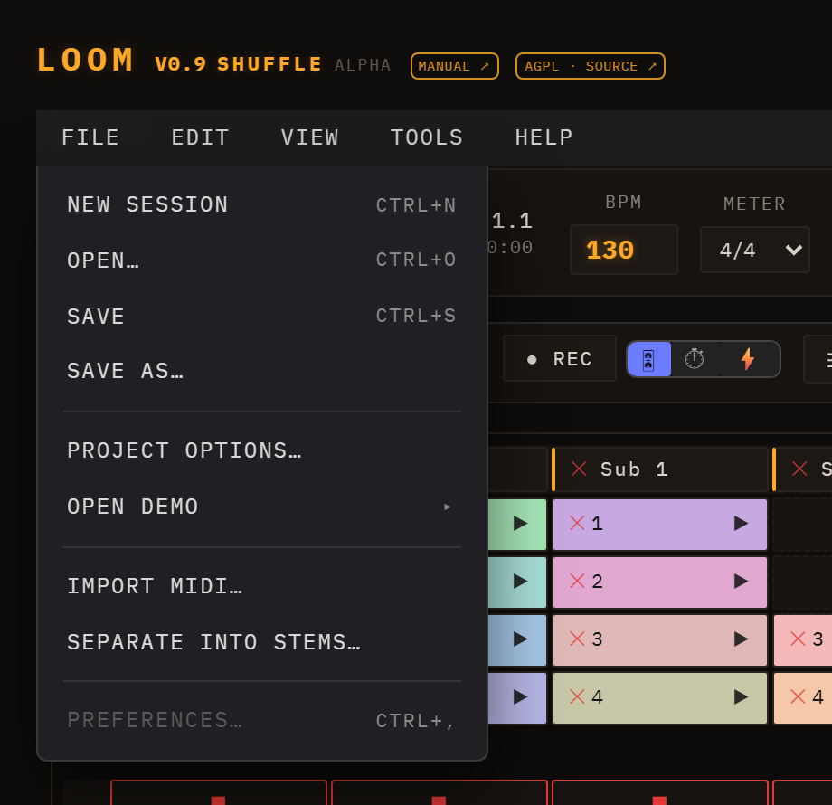
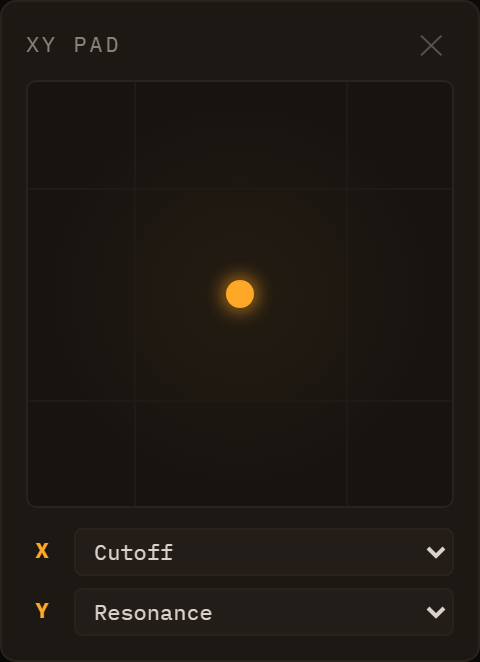
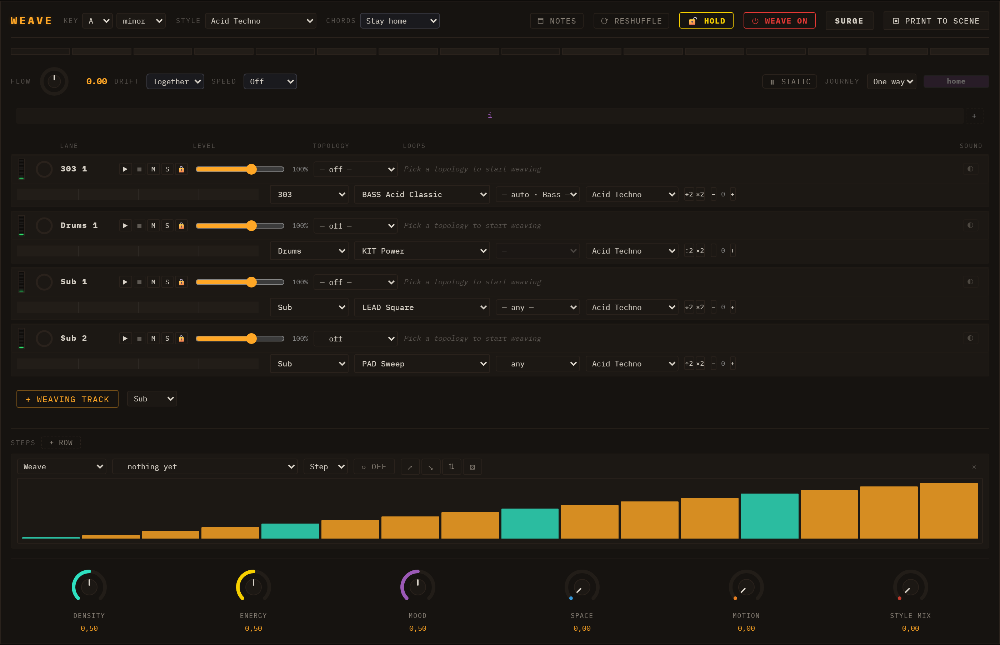

Loom — Manual
Loom is a browser-based, session-based music workstation. It organises sound into lanes (instrument tracks), clips (patterns of notes), and scenes (rows of clips launched together). Eight synthesis engines are available — TB-303, Subtractive, FM, Wavetable, Karplus-Strong, West Coast, Sampler, and Drum Machine — and all synthesis runs live in the browser with no install or sign-in required.
Beyond the engines, Loom has note velocity & dynamics (an Ableton-style velocity lane), per-clip and arrangement-wide loop regions, per-lane modulation and FX with a sidechain mixer, MIDI import, ready-made sampled drum kits, a playable arrangement timeline, improved session editing workflow (inline track/scene rename, duplicate track/scene, and capture-playing-to-scene), optional stem separation + transcription (split a finished song into 4 lanes via a local helper and optionally derive editable note/drum lanes), key & scale musical assistance (a project key/scale with an optional piano-roll scale lock — off by default, genre generators, an examples gallery, and a chord-accompaniment maker), and editable warp markers for locking audio loops to tempo.

The Loom interface: transport across the top, the session clip grid in the centre, and per-lane channel strips below.
Table of Contents
Loom-Manual.pdf
Live demo: https://ijol.github.io/Loom/
Getting Started
Open the app
Loom runs entirely in the browser — no installation, no account, no plugins.
Make your first sound
When the app opens it loads the Minimal Techno demo automatically, so there is already a full arrangement ready to play.
- Click the ▶ Play button in the transport bar. The first click resumes the browser's AudioContext — this is a browser requirement; audio cannot start without a user gesture, so nothing plays until you press Play.
- Sound starts immediately. Use the Volume slider in the transport to adjust the output level.
- Want to hear a different demo? Select one from the — load a demo — dropdown (Minimal Techno, Acid Rain, Cordillera, Neon Drive). The session loads and begins at the first scene.
The full Loom interface. Transport across the top; coloured clips in the session grid; per-lane channel strips below.
Across the very top sits a desktop-style menu bar. Most of what it offers also has a button somewhere in the interface — the menu is the tidy, discoverable route to the same things, and the place to look when you can't remember where a control lives.

File
| Item |
Shortcut |
What it does |
| New Session |
Ctrl+N |
Empties the session and starts fresh |
| Open… |
Ctrl+O |
Opens the save manager to load a stored session |
| Save |
Ctrl+S |
Opens the save manager to store the current session |
| Save As… |
|
Same panel, for storing under a new name |
| Project Options… |
|
Project-wide settings, including the name and the musical key/scale |
| Open Demo ▸ |
|
A submenu of the bundled demos; picking one loads it |
| Import MIDI… |
|
Opens the MIDI import flow (chapter 8) |
| Separate into Stems… |
|
Opens stem separation (chapter 8) |
| Preferences… |
Ctrl+, |
Not yet available — greyed out, planned for a later release |
Edit — Undo (Ctrl+Z) and Redo (Ctrl+Shift+Z, or Ctrl+Y). Both grey out when there is nothing to undo or redo, so the menu doubles as an indicator of whether your last action was recorded.
View — switches between the Session and Performance views, with a tick marking the current one, and toggles the Performance diagnostics (PERF) overlay (audio load, scheduler lag, FPS, voice counts).
Tools — opens the MIDI Controller panel, runs Capture Scene (Ctrl+I, snapshots the currently playing clips into a new scene) and Copy Scenes → Performance.
Help — opens this Manual in a new tab, and About Loom.
Sessions are stored in your browser, not as files on disk: "Open" and "Save" mean the in-browser save manager, described in chapter 9.
The mental model
Loom organises music in three nested concepts:
- A lane is an instrument track. Each lane runs one engine — six melodic ones (TB-303, Subtractive, FM, Wavetable, Karplus-Strong, West Coast), the Sampler, the Drum Machine, or an Audio channel for playing a recording — and has its own mixer strip with EQ, sends, pan, and fader.
- A clip is a pattern of notes that lives in a lane. A lane can hold multiple clips — one per scene row.
- A scene is a horizontal row across all lanes. Launching a scene fires the clip in each lane at that row simultaneously, so scenes work like song sections or loop variations.

The session grid: lanes run left to right as columns, scenes top to bottom as rows. Click a clip to select it; click the scene launch button on the right to fire the whole row.
Click any clip cell to open its editor in the inspector below the grid. The editor shows a piano roll for melodic lanes and a drum grid for drum lanes.
Next steps
Transport
The header runs across the top of the interface in two rows. The first row (transport & tempo) holds the playback and timing controls you touch while the music plays; the second row (session & I/O) holds the mode toggle, recording/export, and session file management.

Play / Stop
Press ▶ (#play, title "Play — start the transport") to start playback, and ⏹ (#stop, title "Stop — stop the transport") to stop it. Play and Stop are now two separate buttons — Play is no longer a play/stop toggle. When you press Play the browser's AudioContext resumes automatically if it was suspended (a browser policy requirement on first interaction).
Position and time readout
The readout shows two values side by side:
- Bar.Beat.Step (
#transport-position, e.g. 1.1.1) — the current song position derived from elapsed time, BPM, and the active meter. The counter resets to 1.1.1 on each new Play.
- Elapsed (
#transport-time, e.g. 00:00:00) — wall-clock time since the most recent Play press.
Both readouts update via requestAnimationFrame while playing and freeze on stop so you can read the final position. Because each lane has its own independent loop clock, the global position is computed from elapsed seconds rather than a single sequencer cursor. The visual playhead is similarly a display-only timer matched to scheduled audio time; it may drift slightly under browser tab throttling, but audio scheduling is unaffected.
Tempo controls
BPM (#bpm) — sets the tempo. Range: 40–400 BPM, default 130. (The ceiling is deliberately high: drum & bass written at its true tempo, and the faster end of hardcore/gabber, both live above 240.) The field accepts floating-point values (e.g. 128.57 BPM, step 0.01); tempos detected from MIDI imports or stem separation are no longer rounded to an integer. You can type a value directly or use the number-input spinners. BPM changes propagate immediately to the sequencer, all lane engines, delay/LFO sync, and stretch-mode loop buffers. The change takes effect on the next scheduled step; it does not alter a note that is already held.
Each 16th-note step lasts 60 / bpm / 4 seconds.
Meter (#meter) — sets the global time signature. The dropdown offers common meters: 4/4, 3/4, 2/4, 5/4, 6/8, 7/8, 9/8, and 12/8. The meter controls how bars map onto the 16th-step grid and how the position readout counts beats. Changing the meter takes effect on the next loop cycle.
Swing (#swing) — adds a shuffle feel by delaying the off-beat 16th notes. Range: 0 (straight) to 0.6. A swing of s delays each off-beat 16th by s × one 16th step, so the off-beat lands 50 × (1 + s) % of the way to the next on-beat — the familiar swing percentage: 0 = straight (50%), 0.33 = the classic triplet shuffle (66.7%), 0.5 = a heavy shuffle (75%), 0.6 = the hardest limp Loom offers (80%). On-beats never move.
Swing applies to every lane, and to notes that do not sit exactly on a 16th too (32nds, imported MIDI, off-grid drum hits): each note is carried along with the beat it belongs to rather than left behind by it. Note lengths follow their notes, so a TB-303 slide still slides. The value is saved and restored with the session, and WAV exports render with the same swing you hear.
Master volume
Volume (#volume) — the master output level, range 0–1 (default 0.5). This is a post-mix gain applied before the output visualiser.
Mode toggle and REC
Session / Performance (#mode-toggle) — switches the main view between the Session clip grid and the Performance arrangement view.
⤉ Copy to Performance (#copy-to-performance) — an icon-only button (tooltip "Copy the scenes to the Performance timeline") that copies the current scenes onto the Performance timeline. See Performance & Arrangement.
- Session is the default mode: you see the clip grid and can trigger scenes, edit clips, and record automation in real time.
- Performance shows the arrangement timeline where recorded takes are displayed as timeline bands and automation curves can be drawn directly. See Performance & Arrangement for the full workflow.
● REC (#rec, tooltip "Record — pick the mode beside it") arms recording; the mode selector (#rec-mode) beside it chooses what gets recorded:
- 🎛 take (
data-recmode="take", the default) — records knob moves and clip launches into a performance take. See Modulation & Note FX for how automation lanes work.
- ⏱ live (
data-recmode="live") — records the real-time audio output to a WAV.
- ⚡ offline (
data-recmode="offline") — renders the current scene to a WAV offline (fast).
Click REC again to disarm. This unified REC group replaced the old standalone WAV-export button.
Output visualiser
The canvas at the far right (#viz) shows a real-time waveform of the master output. It updates continuously while the page is open and gives a quick visual check that audio is flowing.
Session management, export, and demos
The remaining controls in the transport row are covered in dedicated chapters:
- WAV export — there is no longer a standalone "↓ WAV" button. WAV export now happens through the REC group's mode selector (see the Mode toggle and REC section above): ⏱ live records real-time audio to WAV, and ⚡ offline renders the scene to WAV offline (fast). See Saving & Export.
- New / Save / Load (
#new-session, #save, #load) — session file management. See Saving & Export.
- — load a demo — (
#demo-picker) — loads a bundled demo arrangement into the session.
- MIDI import — there is no button for this in the transport row. It lives under File ▸ Import MIDI…, which opens a modal dialog. See the MIDI Import chapter for details.
- ☰ (
#stems-open, an icon-only button tooltipped "Separate a song into stems") — opens the stem-separation dialog, which splits a finished song into four lanes (vocals / drums / bass / other) via a local helper service. Also under File ▸ Separate into Stems…. Requires the service to be running; see MIDI & Samples → Stem separation.
- ⊙ Capture (
#capture-scene) — snapshots the clips currently playing into a new scene (also Ctrl+I, and under Tools ▸ Capture Scene).
- ▣ XY (
#xy-open) — opens the floating XY pad for sweeping two parameters at once. See Mixing & FX → XY pad.
- PERF (
#perf-toggle) — toggles the performance-diagnostics overlay (audio load, scheduler lag, FPS, voice counts). It only runs while open.
- ↺ / ↻ (
#undo-btn, #redo-btn) — global undo and redo, greyed out until there is history.
Keyboard shortcuts
| Key |
Action |
| Space |
Pause / resume |
| R |
Arm or disarm clip MIDI recording |
Ctrl/Cmd+N |
New session |
Ctrl/Cmd+O |
Open |
Ctrl/Cmd+S |
Save |
Ctrl/Cmd+Z |
Undo |
Ctrl/Cmd+Shift+Z or Ctrl/Cmd+Y |
Redo |
Ctrl/Cmd+I |
Capture playing clips into a new scene |
Two things about Space that catch people out:
- It is pause/resume, not stop. It remembers the exact position — including the fraction of a bar — and picks up from there, where Stop resets to the beginning.
- It does nothing from a standing start. If the transport is idle, Space will not begin playback; use ▶ or launch a scene. It only pauses something already playing.
Note also that after a pause/resume the position readout restarts its count from 1.1.1 even though the music continues where it left off — the readout times the current run, not the song.
Shortcuts never fire while you are typing in a text field, so they can't steal input from the BPM box or a name field.
Sessions, Lanes, Clips & Scenes
The session view is the main workspace in Loom. It organises everything you hear into a compact grid of lanes and clips that you can launch, edit, and rearrange in any order.

The model
Lane — one instrument track. Each lane runs one engine — six melodic ones (TB-303, Subtractive, FM, Wavetable, Karplus-Strong, West Coast), the Sampler, the Drum Machine, or an Audio channel — with its own mixer strip and insert chain. Lanes appear as columns in the grid.
Clip — a pattern of notes that lives at one lane × scene cell. Every clip stores a list of note events, an optional name, a colour, and a length in bars. A cell is either filled (it holds a clip) or empty.
Scene — a row in the grid. Launching a scene fires one clip per lane simultaneously, aligning all starts to the same quantize boundary so the whole arrangement snaps together cleanly.
The grid
Lane names run along the top header row; row numbers (1, 2, 3 …) label the scenes down the left edge. Scenes launch buttons sit in the rightmost column. Each filled cell shows the clip's name (or its row number as a fallback) against the clip's pastel colour. Click a lane header to open that lane's instrument editor; once it is open, the ▸/▾ chevron that appears on that header collapses and reopens the editor.
Folding it away is a standing choice about screen space, not a statement about which lane you are on: once collapsed it stays collapsed as you move between lanes, and unfolding shows whichever lane you are now on. (It used to spring open the moment you touched another lane.)
One lane is selected, everywhere
The clip editor and the instrument controls below it always show the same lane. There are several ways to change which one that is — clicking a lane header, opening a clip, clicking a mixer column, or selecting the track from a MIDI controller — and all of them move both halves together.
When you switch lanes, the clip editor follows to the same row on the new lane: if lane A's clip in row 2 is open and you select lane B, you get lane B's row-2 clip. If that slot is empty the editor closes, and nothing is created — an empty cell stays empty until you fill it deliberately. The instrument controls always follow, clip or no clip.
There is one exception, and it is the one you want: opening a clip on another lane does not close the editor it just opened.
A newly created instrument lane starts out empty — no placeholder clips are added to its column; you fill cells yourself. Audio and Sampler lanes created from a dropped WAV or loop place their clip in row 1 only. The grid always keeps at least one launchable scene available even when every lane is empty.
Right-clicking grid elements opens a context menu. On a lane header: Rename track, Edit instrument, Duplicate track, Stop track, and Delete track (red). On a scene cell: Rename scene, Launch scene, Duplicate scene, Capture playing -> scene, Add scene, and Delete scene (red). On a filled clip: Open editor, Play / Stop, Color (a row of swatches), and Delete clip (red). On an empty cell: Create clip — on audio lanes this entry reads Import audio (WAV)....
Below the scene rows there is a stop row: each lane has its own ⏹ stop button, and a global ⏹ all button at the far right stops every lane at once.
Deleting from the grid
A small ✕ cross appears on every lane header (Delete track), every filled clip cell (Delete clip), and every scene cell (Delete scene). Deleting a clip is immediate. Deleting a lane or scene asks you to confirm in an in-app dialog (OK / Cancel, with the destructive choice in red) only when the target still has content — an empty lane or scene is removed straight away. Every deletion is undoable with Ctrl+Z, which restores the lane, scene, or clip along with its audio resources.
Launching clips and scenes
Click the ▶ icon on any filled cell to launch that clip. The icon switches to ⏸ once the clip is playing; clicking ⏸ stops that lane. Clicking anywhere else on the cell body — outside the play icon — opens the inspector without affecting playback.
From a cold start (transport stopped), launching a clip starts it immediately, and the Quantize setting decides the alignment of that first start. While the session is already playing, Loom keeps everything phase-aligned instead:
- Launching a single clip swaps it in at the end of its own current loop, so the new pattern enters cleanly on the downbeat rather than mid-bar.
- Launching a scene is an atomic switch at the end of the governing loop — normally the longest loop currently playing, so short clips do not cut a long one off mid-phrase. One stray very long clip is ignored rather than allowed to hold everything up: if the longest loop is more than twice the next longest, it is dropped and the comparison repeats, so a lone 16-bar pad does not make a session of 4-bar clips wait sixteen bars to change scene. Every clip in the scene changes together on that boundary, and any lane that has no clip in the new scene stops at the same moment (it pulses a "stopping" state until then). The result is a clean, simultaneous scene change with no lanes left hanging.
Click the ▶ scene name button at the right of a scene row (it reads ▶ Scene 1, or whatever you renamed it to — not a bare number) to launch all clips in that row. The toolbar's ⏹ All button stops every lane at once.
The Quantize setting (per clip, falling back to the lane's, then the session's global) governs cold starts — the alignment used when you launch from a stopped transport. Once the transport is running, the loop-end sync above takes over so launches stay musically aligned.
Renaming, duplicating, and capturing scenes
Track and scene names support inline rename: double-click a lane name in the header or a scene name in the scene cell, type the new label, and press Enter.
You can also use the context menus to duplicate structure quickly:
- Duplicate track clones the whole lane with fresh clip ids and keeps its clip content.
- Duplicate scene appends a full clone of that scene's lane/clip assignments.
To snapshot the current live state into a new scene, use Capture scene:
- Click the ⊙ button in the Scenes header (tooltip: New scene from currently playing clips).
- Or press Ctrl+I.
- Or use Capture playing -> scene from a scene cell's context menu.
Capture scene appends a new scene row and writes one clip-per-lane mapping from whatever is playing at that moment.
The inspector
Clicking a clip cell body opens the inspector below the grid with controls for that clip.

| Control |
What it does |
| Name |
Free-text label shown on the cell. |
| Length (bars) |
How many bars the clip plays before looping. |
| Quantize |
Per-clip launch alignment: Default (inherits lane/global setting), Immediate (no wait), or a fixed interval — 1/4, 1/2, 1 bar, 2 bars, or 4 bars. |
| Copy notes |
Copies the clip's notes to an internal clipboard. |
| Paste ▸ Replace |
Replaces the selected clip's notes with the clipboard contents. |
| Paste ▸ Layer |
Merges the clipboard notes into the selected clip rather than replacing them. |
| Duplicate |
Creates a copy of the clip in the next empty cell of the same lane. |
| View as grid / View as piano roll |
Toggles between the piano-roll editor and the drum-grid editor — the button always names the view you are not in. The appropriate editor is chosen automatically based on the lane's engine; use this button to switch if needed. It changes only how the clip is edited, never how it sounds. See Editing Clips for the full editing reference. |
| 🎲 Notes |
Randomizes the clip's note content using the current scale and root settings. |
| Delete |
Removes the clip from the grid (also triggered by Delete/Backspace while the inspector is open). |
The editor embedded inside the inspector is rebuilt each time a new clip is selected; deep editing of notes is covered in Editing Clips.
Arranging clips
You can move a clip to any other cell by dragging it. Hold Ctrl while dragging to copy instead of move. Clips remember their colour across moves and copies. Drag a clip onto a cell that already has a clip to swap or replace it.
Each clip is assigned a colour automatically from a pastel palette, so you can distinguish patterns at a glance even before you give them names. To choose a different one, right-click the clip and pick from the Color swatches.
For the mixer strip, insert effects, and per-lane send levels, see Mixing & FX. For the available synthesis engines on each lane, see Engines.
Engines
Every lane in Loom runs exactly one synthesis engine. You pick it when you
create the lane, from the + menu at the top of the clip grid, which lists
every engine. Afterwards you can swap a lane's engine from the ENGINE
selector at the top of its editor panel — that dropdown offers the piano-roll
engines only, so a lane can be moved between them freely but not turned into a
Drum Machine, which edits on the drum grid. Changing the engine replaces the
sound source while preserving the lane's clips and modulation routing.
This chapter covers eight engines: six melodic synthesisers (TB-303,
Subtractive, FM, Wavetable, Karplus-Strong, West Coast), a Sampler, and a Drum
Machine. A ninth choice, the Audio channel, plays a recording rather than
synthesising one and is covered in
MIDI & Samples.
Each engine exposes a PRESET dropdown with Load, Save As… and Delete
beside it, and a 🎲 Sound button that randomises the patch and sets the
preset name to "Custom". See
Sessions, Lanes, Clips & Scenes for how to
add and configure lanes.
Factory presets and your own
The dropdown has two groups.
Factory are the presets the engine ships with, carried inside the engine
itself and tagged with GM programme numbers so MIDI import can pick a sensible
engine and preset for each imported track. There are 23 to 28 of them on each of
the melodic engines — and 102 on Subtractive, which is the one with the widest
range to cover. Selecting one
applies it immediately; there is no need to press Load, which only re-applies
whatever is already selected.
User is whatever you have saved. Save As… asks for a name and stores the
sound exactly as it stands on that lane. Two things about it are worth knowing:
- A user preset belongs to its engine. Saving "Bells" on an FM lane files it
under FM, and it is offered on FM lanes only — a Wavetable lane can hold its
own, different "Bells" without the two ever meeting.
- It saves the instrument, not the desk. The lane's volume, pan, sends and EQ
are left out on purpose, so recalling a preset changes how the sound is made
without moving where it sits in the mix.
Delete removes a user preset; factory presets cannot be deleted, and the
button says so if you try.
Your saved presets live in the browser, not in the session file. That cuts both
ways: they follow you from one song to the next, and they are not included
when you share a save — someone opening your session gets the sound, because the
parameter values travel with the lane, but not the entry in their own preset
list. It also means clearing your browser's site data takes them with it.
The dice rolls the instrument, not the desk: it leaves the lane's mixer column
(volume, pan, sends, EQ), the polyphony setting and the master tune exactly where
you put them, so a randomised sound stays at the level and in the tuning the rest
of the mix expects. Rolls are biased towards each parameter's current value
rather than spread flat across its range, so most of them land near a sound that
works and the extremes are the tail, not the norm. Hit it repeatedly: it is the
fastest way to find out what an engine can do.
Every engine responds to note velocity. Velocity (0–127) scales each note's
loudness continuously along a curve with a floor, so even the softest note still
sounds. Accent (velocity ≥ 100) layers additional character on top, and what it
adds is engine-specific: it brightens the filter envelope on the bass-style
engines (and on the TB-303 alone also raises the resonance), drives the
wavefolder harder on West Coast, and simply hits harder on drums. For how to
view and edit velocities in the piano-roll or drum-grid, see
Velocity & dynamics.
Turning a knob while a note is sounding
Loom's continuous parameters are live. Hold a note — or let a pattern run —
and move a cutoff, a resonance, an FM ratio, a wavefolder amount: the sound
already playing bends with your hand, the way it does on hardware. You do not
have to wait for the next note.
A few parameters deliberately do not work that way, and they are the ones where
changing mid-note would produce a click rather than a sweep:
- Waveform and filter model — the shape itself, not a value on it.
- Unison size — how many copies make up a voice.
- Every envelope time — attack, decay, release. The envelope is computed from
how long the note has been held, so re-reading an attack halfway through would
jump the level instead of gliding it.
Those apply from the next note you play. Everything else is immediate. (The Drum
Machine is the exception to the whole section: its parameters are read when the
hit fires.)
TB-303

Above: TB-303 editor — Wave, Cutoff, Resonance, Env, Decay, Accent, and a per-lane LFO.
The TB-303 is a monophonic, resonant bass synthesiser modelled on the Roland
TB-303. It is the natural choice for acid bass lines but works equally well for
aggressive leads and any sound that calls for a steep, self-oscillating filter
sweep.
TB-303 parameters
| Parameter |
Description |
| Wave |
Sawtooth or Square oscillator waveform |
| Cutoff |
Filter cutoff frequency (0–100%) |
| Resonance |
Filter Q — see the note on the diode ladder below |
| Env |
How far the filter envelope opens the filter per step (the classic "env mod") |
| Decay |
Filter envelope decay time |
| Accent |
Per-step level: brightens the filter, bumps Q, raises output gain |
The filter is a diode ladder. This is the circuit that gives the 303 its
voice: its asymmetric clipping adds even harmonics, which is where the
squelch comes from. One consequence surprises people used to other synths —
a ladder loses level as resonance rises, instead of growing a peak on top of
the signal. Turning Resonance up thins and quietens the sound rather than
making it louder. That is correct behaviour, and the engine compensates
internally so that accented steps still punch through.
Slide and accent behaviour
A note's slide flag means "slide into the next step". When the scheduler
emits step N it checks whether step N-1 carried a slide flag; if so, it ramps
the pitch from the previous note and skips the amp re-attack so the gate stays
open across the boundary. The outgoing step gets an extended gate (1.5× step
length) so the overlap is audible.
Accent is a per-step flag that simultaneously brightens the filter envelope,
raises the resonance Q, and boosts the output gain — the classic 303 bassline
punctuation technique.
The engine ships with 20+ presets from "BASS Acid Classic" to "LEAD Squelch".
See Editing Clips for how to set slide and accent on
individual steps.
Subtractive

Above: Subtractive editor — OSC 1/2, Sub oscillator, Noise, Filter (with
built-in envelope), Amp, and POLY controls.
The Subtractive engine is a classic analogue-style polyphonic synthesiser with
two oscillators, a sub oscillator, a noise source, a multimode filter, and a
full amplitude envelope. It is the most general-purpose engine in Loom and
suits pads, leads, basses, and plucks — and with 102 presets it has by far
the largest library of any engine here.
Parameter sections
- OSC 1 / OSC 2 — waveform, level, detune in cents, PW, and Sync.
Detuning the two oscillators creates the classic "supersaw" chorus effect.
See Oscillator extras below for PW and Sync.
- RING — level of the ring modulator, OSC 1 × OSC 2. See
Ring modulation below.
- SUB / NOISE — sub oscillator level (one octave below OSC 1) and a
noise generator for breath and texture.
- FILTER A — Mode, Type, Cutoff, Resonance, Env Amount, Drive, Key
Track, and a full ADSR filter envelope (toggle with Built-in Env). See
Mode and Type and
The comb, and its two borrowed knobs.
- FILTER B — a second filter with its own Mode, Type, Cutoff and Res, plus
Routing, Blend and Track, which decide how it combines with
Filter A. See
Two filters, and how they are wired.
- AMP — Attack/Decay/Sustain/Release amplitude envelope (toggle with
Built-in Env).
- MASTER — global Tune in semitones, plus Unison, Detune and
Drift. See Unison.
- POLY — voice count (1–16), poly/mono mode, and legato/retrig behaviour
in mono mode.
Mode and Type
Two controls. Mode picks the circuit; Type picks the response you take
out of it — and Type only ever offers the responses that circuit can honestly
produce.
| Mode |
Slope |
Character |
Types it offers |
| DIG (default) |
12 dB/oct |
A clean state-variable filter. Precise and neutral, and what most presets are voiced against. |
LP, HP, BP, NOTCH |
| MOG |
24 dB/oct |
A four-pole Moog-style ladder. Warmer, and it thins as it resonates. |
LP, HP, BP |
| 303 |
24 dB/oct |
The diode ladder from the TB-303. Asymmetric clipping adds even harmonics — the acid voice. |
LP, HP, BP |
| COMB |
— |
A delay summed back on itself: a whole series of peaks instead of one corner. Metallic and hollow. |
POS, NEG, FF |
Why the ladders have no NOTCH. A ladder's resonance feedback fills a notch's
null in, and on the diode model at high resonance the null inverts into a peak.
A notch that becomes a bump is not a notch, so under MOG or 303 the button is
not there — rather than being there and quietly handing you the lowpass, which
is what this used to do.
The ladders' HP and BP are the real thing, not the lowpass relabelled: a ladder
is four one-pole filters in a feedback loop, and the other responses come out of
its stage taps the same way the Oberheim Xpander derives its modes.
A second thing worth knowing about the ladders: they lose level as resonance
climbs, rather than growing a resonant peak on top. Turning Q up on MOG or 303
thins and quietens the sound. That is faithful to the hardware, and it is why
the TB-303 engine compensates with a dedicated accent gain.
The comb, and its two borrowed knobs
Under COMB the filter delays the signal and adds it back to itself. The
delayed copy reinforces every frequency whose period fits the delay and cancels
the ones that fall between, so instead of one corner you get a series of evenly
spaced peaks — which is why it sounds like a plucked string or a hollow tube
rather than a filter.
Its three types are three different instruments:
| Type |
What it does |
Sounds like |
| POS |
Peaks on every harmonic of the tuning |
a plucked string |
| NEG |
Peaks on the ODD harmonics only |
a stopped pipe, a clarinet |
| FF |
No feedback: notches instead of peaks |
a flanger frozen mid-sweep |
POS and NEG differ by a single sign and sound nothing alike — cancelling the
even harmonics is what makes a clarinet a clarinet.
Two knobs mean something else while COMB is selected, and it is worth knowing
before you reach for them:
- Cutoff is the comb's TUNING — the frequency its peaks are spaced by, not a
corner frequency. Sweeping it slides the whole series.
- Resonance is the feedback — how much comes back round, so how long it
rings and how sharp the peaks are. Under FF there is no feedback path at
all, so it sets how deep the notches cut and cannot ring however far you push
it.
Two filters, and how they are wired
FILTER B is a second filter with its own Mode, Type, Cutoff and Res. It is
off until Routing says otherwise:
| Routing |
What comes out |
| Off (default) |
Filter A alone. Filter B is not even built. |
| Series |
A feeds B — two filters in a row, steeper and darker. |
| Parallel |
Both filters see the same signal and the results are summed. |
| Difference |
A minus B. |
Blend always means the same thing: how much of B is in the result. At 0 all
three modes sound exactly like Off, so you can bring the second filter in by
hand — or put an LFO on Blend and have the routing itself breathe.
Difference is the one worth explaining. Subtracting one lowpass from another
leaves only what sits between their two cutoffs: a band-pass whose two edges you
set separately, with its own resonance on each. No single circuit here produces
that, and it is why having the same filter in both slots is useful rather than
redundant.
A comb added to a filter needs no special setting — that is Filter A = DIG,
Filter B = COMB, Routing = Parallel, which IS a sum. Series combs what the
filter left, and Difference removes exactly what the comb reinforces.
Track (0–1) decides how filter B moves. Everything that sweeps filter A —
its envelope and its key tracking — is expressed as a ratio, and Track is how
much of that ratio B follows:
- 0 — B stays exactly where its knob puts it. The classic fixed high-pass
sitting under a low-pass that sweeps.
- 1 — B moves by the same ratio as A, so the interval between the two stays
constant in octaves. Two formants sweeping as a block.
Oscillator extras: PW and Sync
PW (Pulse Width) — 0.05 to 0.95, centred at 0.5. On its own it reshapes a
square wave from a hollow, nasal thin pulse through the full-bodied square at
0.5 and out the other side. The classic use is PWM: assign an LFO to
osc1.pw and the width breathes back and forth, turning a static square into a
wide, shimmering pad. This is the single most rewarding modulation target on the
engine.
Sync (hard sync) — select Sync as the waveform and the oscillator runs
a second, faster oscillator that is force-restarted on every cycle of the first.
The restart chops the waveform mid-cycle, producing the aggressive, tearing
timbre of a synced lead. Here the Sync knob (1–8) sets the ratio between the
two, and that ratio is the timbre — the pitch you hear still follows the note.
Sweeping the Sync knob (or modulating it) gives the classic sync-sweep lead.
Presets LEAD Sync, LEAD Sync Sweep and BASS Sync are built on it.
Ring modulation
Ring (0–1, default 0) multiplies OSC 1 by OSC 2 and mixes the result in as
a source of its own, alongside Sub and Noise — it does not replace either
oscillator. Multiplying two tones produces their sum and difference
frequencies instead of their harmonics, so the result is inharmonic: bells,
gongs, metallic clangs and robot voices.
Two things drive the sound:
- The interval between the oscillators. A few cents of Osc2 Det gives a
slow beat and a tone an octave up; wide detunes turn it clangorous. The
interval is the timbre, so a note played higher changes the character as
well as the pitch — which is exactly why ring mod sounds inharmonic.
- The oscillator levels, which Ring ignores. The product is taken before
the level knobs, so you can pull OSC 1 and OSC 2 down to zero and hear the
ring modulator alone — the classic bell — or leave them up and let the metal
sit on top of the raw oscillators.
Ring is continuous, so it is a modulation target like any other: an ADSR on
ring.level gives a metallic attack that decays into a clean tone, and a slow
LFO breathes the clang in and out.
Unison, Detune and Drift
In the MASTER section:
| Parameter |
Description |
| Unison |
Stack 1–7 copies of the whole voice per note (default 1) |
| Detune |
How far the stack spreads apart, 0–50 cents (default 25) |
| Drift |
Slow, random analogue pitch wander, 0–1 (default 0) |
Unison is what makes a lead enormous: seven slightly-detuned copies beating
against each other is the supersaw sound. It costs CPU in proportion — seven
copies is seven times the synthesis work per note — so raise it for leads, not
for dense pads.
Unison is read once when the note is triggered — it is one of the structural
parameters listed in Turning a knob while a note is
sounding, so it is deliberately not
a modulation target and changing it affects the next note you play, not the one
currently sounding. Drift is the opposite: a touch of it
(0.1–0.2) keeps sustained chords from sounding sterile.
For modulation routing see Modulation & Note FX.
FM

Above: FM editor — Algorithm selector, Op 1–4 (Ratio/Detune/Level/ADSR),
global Mix and Voices.
The FM engine is a four-operator, DX7-style frequency-modulation synthesiser.
Each operator is a sine oscillator with its own ADSR amplitude envelope and
level; operators are wired together according to one of four algorithms.
FM parameters
| Parameter |
Description |
| Algorithm |
1 = serial 4→3→2→1; 2 = three parallel mods → Op 1; 3 = two pairs; 4 = additive |
| FB (Op4) |
Op 4 self-feedback — adds odd harmonics and edge |
| Op 1–4: Ratio |
Frequency ratio relative to the played note (0.1–16×) |
| Op 1–4: Det |
Per-operator detune in cents |
| Op 1–4: Level |
Carrier output level or modulation index (modulators) |
| Op 1–4: ADSR |
Per-operator amplitude envelope |
| Mix |
Final output level (0–1) |
| Voices |
Polyphony cap (1–16; default 6) |
FM suits metallic tones, electric pianos, bells, and evolving textures. Small
ratio changes yield very different timbres; the preset library covers bells,
organs, and electronic basses.
Wavetable

Above: Wavetable editor — Wave A/B selectors, Morph, Detune, Filter, Amp
envelope, and Voices.
The Wavetable engine morphs between two pre-computed waveforms — Wave A and
Wave B — using the Morph knob or an LFO/ADSR routed to it. Both waves are
drawn from a fixed bank of eight anti-aliased tables: Sine, Triangle, Sawtooth,
Square, PWM 25%, Organ, Brass, and Vocal.
Wavetable parameters
| Parameter |
Description |
| Wave A / Wave B |
Source waveforms to interpolate between |
| Morph |
Crossfade position (0 = full Wave A, 1 = full Wave B) |
| Detune |
Global detune in cents |
| Cutoff / Res |
Resonant low-pass filter |
| Built-in Env |
Toggle the built-in amp ADSR on/off |
| Attack / Decay / Sustain / Release |
Amplitude envelope |
| Voices |
Polyphony cap (1–16; default 8) |
Animating Morph with an LFO is the signature technique — sweeping from Sine to
Sawtooth or Brass to Vocal while a note sustains produces evolving, living
tones. See Modulation & Note FX.
Karplus-Strong

Above: Karplus-Strong editor — String section (Damping, Brightness), Excite
section (Excite time, Noise Tone), and Amp controls.
Karplus-Strong is a physical-modelling engine that synthesises plucked-string
sounds. Loom renders each note offline (sample-by-sample in JavaScript) into a
buffer and plays it back through an amplitude envelope. This gives exact pitch
at every frequency, natural high-harmonic roll-off, and no feedback runaway.
Karplus-Strong parameters
| Parameter |
Description |
| Damping |
T60 decay: 0 = long sustain (~4 s), 1 = muted (~0.12 s) |
| Brightness |
Loop filter: 0 = dark/cello, 1 = open/metallic |
| Excite |
Excitation burst length (pluck sharpness) |
| Noise Tone |
Colour of the excitation noise (dark → bright) |
| Built-in Env |
Toggle the built-in amp envelope on/off |
| Attack / Release |
Amp envelope on buffer playback |
| Level |
Output amplitude |
| Voices |
Polyphony cap (1–16; default 8) |
Damping and Brightness are set per-note at the moment of the pluck (baked into
the buffer). Level and its envelope stay live and can be modulated.
Karplus suits acoustic bass, guitar, harp, and marimba-style sounds.
West Coast

A Buchla-style "West Coast" voice: complex oscillator → wavefolder → low-pass gate, driven by a built-in AD contour.
The West Coast engine takes a fundamentally different approach to synthesis from the filter-based ("East Coast") engines above. Instead of shaping a harmonically-rich waveform by subtracting frequencies with a filter, it adds harmonics by routing an oscillator through a wavefolder and then taming the result with a low-pass gate. The result is highly percussive and organic — metallic plucks, woody tones, evolving bell-like pads, and abstract textures that are difficult to achieve with conventional subtractive synthesis.
The engine is polyphonic — up to 16 voices, 8 by default — with a Poly/Mono switch in the AMP section if you want the classic one-voice-at-a-time behaviour. FM here is native-linear, not through-zero.
The signal chain is: Complex Oscillator → Timbre (Wavefolder) → Low-Pass Gate (LPG) driven by an AD Contour.
COMPLEX OSCILLATOR section
Two cross-coupled oscillators produce the raw material. The principal oscillator's frequency is modulated by the modulator oscillator (linear FM), optionally ring-modulated, and a sub-harmonic divider can be added below.
| Parameter |
Description |
| Princ Wave |
Waveform of the principal oscillator: Sin, Tri, or Saw |
| Mod Wave |
Waveform of the modulator oscillator: Sin or Tri |
| Ratio |
Frequency ratio of the modulator relative to the principal (0.25–16×) — integer ratios produce harmonic tones; non-integers produce inharmonic, bell-like partials |
| FM Index |
Depth of linear FM from the modulator into the principal (0–1) — higher values add more sidebands |
| Ring/AM |
Amount of ring modulation mixed in (0 = off, 1 = full ring mod) |
| Sub ÷ |
Sub-harmonic divider: Off, 2, 3, or 4 — it divides the frequency, so 2 is an octave below, 3 is an octave and a fifth below, and 4 is two octaves below. 3 therefore adds a fifth rather than a plain sub |
| Sub Lvl |
Output level of the sub-harmonic oscillator (0–1) |
| Detune |
Fine-tune of the principal oscillator in cents (±50 ¢) |
TIMBRE section (wavefolder)
The wavefolder processes the summed oscillator signal through a non-linear waveshaping curve. As the Fold amount increases it drives the signal harder into the curve, folding the waveform back on itself and adding a cascade of new harmonics. Accent (velocity ≥ 100) pushes the fold drive harder automatically.
| Parameter |
Description |
| Fold |
Drive into the fold curve (0 = gentle/clean, 1 = heavy folding/maximum harmonics) |
| Symmetry |
DC bias applied before the folder — shifts the waveform asymmetrically for even-harmonic colouring (−1 to +1) |
LOW-PASS GATE section
A low-pass gate combines a resonant filter and a VCA in a single, vactrol-like element so that the contour simultaneously opens the brightness and the volume. The Mode selector determines how the contour is routed.
| Parameter |
Description |
| Mode |
LP — contour sweeps the filter only (VCA stays open); Gate — contour opens the VCA only (filter stays at its base cutoff); Both — contour drives both, the most classic "plonky" Buchla behaviour |
| Cutoff |
Base cutoff frequency (0–1, exponential scaling from ~60 Hz to 18 kHz) |
| Resonance |
Filter Q (0–1) — adds resonant emphasis at the cutoff |
CONTOUR section
A single AD (attack–decay) envelope generator, similar to the contour generator in a Buchla 281. It drives both the LPG filter and VCA according to the Mode setting above.
| Parameter |
Description |
| Mode |
Pluck — decay is gate-independent (fires and fades regardless of note length); Sus — holds at peak until the note ends, then decays |
| Attack |
Rise time (1 ms – 2 s) |
| Decay |
Fall time (5 ms – 4 s) — in Pluck mode this is the T60 envelope; in Sus mode this is the release time after gate-end |
| Amount |
Peak level of the contour (0–1) — scales how far the LPG opens |
| Cycle |
On — re-triggers the AD shape repeatedly while the note is held, turning the contour into a free-running LFO-like modulator |
AMP section
| Parameter |
Description |
| Level |
Master output gain (0–1) |
| Tune |
Global pitch offset in semitones (±12 st) |
| Voices |
Polyphony, 1–16 (default 8) |
| Mode |
Poly or Mono |
The engine ships with 24 presets — spanning percussive bass plucks (BASS Fold Sub, BASS Growl FM), bells (BELL Metallic, BELL Crystal Ring), pads (PAD Fold Drone, PAD Glass Air), keys (KEYS Fold E-Piano, KEYS Marimba Fold), and abstract textures (FX Cycle Burst, FX Sci-Fi Cycle) — selectable from the lane's preset dropdown. Per-section knob accent colours group the COMPLEX OSCILLATOR, TIMBRE, LOW-PASS GATE, and CONTOUR sections visually.
Sampler

Above: Sampler editor — global Gain/Voices controls; per-pad controls appear
once samples are loaded.
The Sampler engine plays back audio samples mapped across the keyboard. Each
keymap zone (pad) has its own per-pad parameters read at trigger time, making
it possible to tune, filter, and pan individual pads independently.
Global parameters
| Parameter |
Description |
| Gain |
Master output gain for the lane |
| Voices |
Polyphony cap (1–16; default 8) |
Per-pad parameters
Shown in the drum-voice rack once pads are mapped.
| Parameter |
Description |
| Tune |
Transposition in semitones (−24 to +24) |
| Cutoff / Res |
Per-pad resonant low-pass filter |
| Attack / Decay |
Per-pad amplitude envelope |
| Level |
Per-pad output level |
| Pan |
Stereo position |
| REV / DLY |
Send amounts to Send B (a Reverb by default) and Send A (a Delay by default) |
| Loop / Loop Start / Loop End |
Loop mode (one-shot or loop-while-gated) and the loop region (start/end as a fraction of the sample) |
| Sample Start / End |
Trim the played window — start/end as a fraction of the sample; draggable on the waveform in the Selected sample panel |
| Retrig |
Poly (voices overlap) or Mono (re-hit cuts the previous voice) |
A Sampler lane with pads mapped to GM drum note numbers automatically enters
drumkit mode and shows the drum-grid editor instead of the piano roll. For
details on loading samples and building keymaps see
MIDI & Samples.
Drums (Drum Machine)

Above: Drums editor — Preset row, master bus knobs (Vol/Pan/A/B/Lo/Mid/Hi),
per-voice rack with each voice's own synthesis and mixer controls.
The Drums engine is a fully synthesised ten-voice drum machine — no samples
required. All ten voices (Kick, Snare, Rimshot, Closed Hat, Open Hat, Clap,
Cowbell, Tom, Ride, Crash) are built from oscillators, noise generators, and
simple envelopes.
Each voice routes through its own channel strip and then to a shared drum bus.
Voice synthesis rack
The per-voice rack exposes the key parameters for each voice:
| Voice |
Key parameters |
| Kick |
Tune, Attack (click), Decay, Start/End Freq, Sweep, Wave |
| Snare |
Tune, Tone body, Snap (noise), Body Decay, Noise Decay, Noise Tone |
| Rimshot |
Tune, Decay, Freq |
| Closed Hat |
Tune, Decay, Filter |
| Open Hat |
Tune, Decay, Filter |
| Clap |
Tone, Decay, Sharp (filter Q) |
| Cowbell |
Tune, Decay, Detune |
| Tom |
Tune, Decay, Sweep, End Freq |
| Ride |
Tune, Decay |
| Crash |
Tune, Decay |
Each voice also has its own mixer row — Level, A, B, Pan, Lo, Mid, Hi — where
A and B are that voice's send amounts to Send A (a Delay by default) and
Send B (a Reverb by default).
Drum preset dropdown — synth kits and sample kits
The preset dropdown for any drum lane lists kits from five groups:
| Group |
Kits |
How it works |
| GM |
KIT Standard, KIT Room, KIT Power, KIT Electronic, KIT TR-808, KIT Jazz, KIT Brush, KIT Orchestra |
GM-programme aliases that map to the synth kits below |
| Synth |
TR-909, TR-808, TR-606, CR-78, LinnDrum |
100% synthesised DSP — no samples required |
| Samples |
TR-808 (samples), Acoustic (samples), Dirt (samples) |
Real one-shot WAVs bundled with Loom |
| Drum Machines |
64 sampled kits from classic boxes (Roland, LinnDrum, Korg, Oberheim, Casio, E-mu…) |
Sampled one-shots from the tidal-drum-machines collection — a large library of vintage drum-machine sounds |
| Percussion |
GM Percussion |
A 31-pad General-MIDI percussion set (sampled) |
Synth kits seed every voice's parameters from the kit's characteristic values; you can edit individual voices on top and hit 🎲 Sound to randomise all voices at once.
Sample kits load the matching WAV for each voice (kick, snare, closed hat, open hat, clap, tom, cowbell, ride) from public/drumkits/ and rebuild the keymap fresh on every session load — you never need to re-import the files manually. Once a sample kit is selected, the lane uses the drum-grid editor and the full per-pad parameter rack, exactly like a Sampler lane in drumkit mode.
The sample WAVs are curated one-shots from the Dirt-Samples collection (used by TidalCycles), classic TR-808 recordings, and — for the Drum Machines group — the tidal-drum-machines library. Full credits are in the repo README.md under "Credits — sample sources".
Note: sample kits are loaded by the Sampler engine under the hood. For the Sampler's own PRESET dropdown (grouped Presets / Drumkit / Loop) and per-pad parameters, see MIDI & Samples.
Bus controls
The master bus row gives Vol, Pan, A, B, Lo, Mid, and Hi (±18 dB) for the whole
drum bus — A and B being the bus's sends to Send A and Send B. Lo and Hi
are shelves; Mid is a peaking band. These are automatable via
Modulation & Note FX. Routing to the shared
reverb and delay sends is covered in Mixing & FX.
Choke groups
Each drum voice has a Choke dropdown in the voice's advanced area of the per-voice rack. Voices assigned to the same non-zero choke group are mutually exclusive: triggering one immediately cuts the tails of all other voices in the same group. A voice assigned to group 0 (the default) is never choked by anything.
The default configuration is closed hat and open hat both in group 1, which gives the classic hi-hat choke behaviour — hitting the closed hat silences the open hat's ring, just as on a real drum kit. You can reassign any voice to any group number to create other exclusive pairs, for example a conga and cowbell that cannot overlap.
Summary table
| Engine |
Best for |
Standout parameters |
| TB-303 |
Acid bass lines, resonant leads |
Slide, Accent, Env |
| Subtractive |
Pads, leads, basses, general-purpose |
Dual OSC detune, Filter Drive, Key Track, POLY mode |
| FM |
Bells, electric pianos, metallic textures |
Algorithm, per-operator Ratio, FB feedback |
| Wavetable |
Evolving tones, digital leads, pads |
Morph (A→B crossfade), 8-waveform bank |
| Karplus-Strong |
Plucked strings, guitar, harp |
Damping (sustain), Brightness, Excitation |
| West Coast |
Percussive plucks, metallic tones, evolving textures |
Wavefolder (Fold), LPG Mode, Contour Cycle |
| Sampler |
Any audio, drum kits with per-pad control |
Per-pad Tune/Filter/Envelope, Loop mode |
| Drums |
Synthesised drum machine, percussion |
10-voice synth rack, kits-as-presets, bus EQ, Choke groups |
Editing Clips
Every clip in Loom holds a sequence of notes. The editor always belongs to the selected lane — the same one the instrument controls below it are showing, however you got there (One lane is selected, everywhere). Its header carries the clip's ▶ and ● Rec, and the lane's M and S, so you can mute or solo the part you are editing without going back to the mixer.
To edit those notes, click the body of any filled cell in the session grid — anywhere except the ▶ play icon or the ✕ delete cross in its corner (clicking ✕ deletes the clip outright, with no confirmation). You can also right-click a filled cell and choose Open editor. The inspector panel opens below the grid and the editor renders inside it. Closing the inspector does not stop playback — launching and editing are independent.
Melodic lanes (TB-303, Subtractive, FM, Wavetable, Karplus, West Coast, Sampler) open the piano-roll. Drum-machine lanes and sampler lanes that have a drum kit loaded open the drum-grid. If you want to switch between the two views for a given clip, click the button in the inspector toolbar that names the other view — it reads View as grid while you are in the piano roll and View as piano roll while you are in the grid. Its tooltip states the important part: "Change how this clip is EDITED; it does not change the sound."
See Sessions, Lanes, Clips & Scenes for how clips are organised, and Engines for the controls each engine exposes.
Key, scale & musical assistance

The project key/style bar sits in the transport strip next to Meter; the 🔒 Scale button and the 🎲, Vary, Mirror, Reverse, and Chords controls appear in the clip-editor toolbar.
Loom's musical-assistance layer works from a single shared project key and style setting. Everything that generates or reshapes notes — the random generator, the examples gallery, the pattern transforms, the chord harmoniser — reads that setting and stays in key automatically. You can override it on a per-lane basis when one part needs to inhabit a different harmonic world.
Project key & style bar
In the top transport bar, next to the Meter control, a button displays the current project tonality and the scale-lock state — for example 🎼 A minor · Acid / Techno · 🔓. The 🔒/🔓 glyph at the end tells you at a glance whether the scale lock is on, without opening anything. Click the button to open the key/style panel.
The panel has three pickers and a lock toggle:
- Root — the tonic note (C through B).
- Scale — chosen by feel rather than by musical-theory name. Each option shows a mood label, the musical name in small print, and a one-line usage hint:
- 🌙 Dark / tense — minor · the classic acid/techno sound
- 🛡️ Safe (almost anything fits) — pentatonic minor · hard to sound wrong; riffs & basslines
- ☀️ Bright / open — major · pop, most "happy" music
- 🔥 Mysterious / hypnotic — phrygian · dark acid, EBM
- 🌊 Groovy / swung — dorian · house & funk
- 🎛️ Anything goes (no net) — chromatic · any note; no safety net
- Style — the rhythmic and harmonic character used by the generators. There are 20: Techno, Acid Techno, Dub Techno, House, Deep House, Garage, Trance, Psytrance, EDM, Breakbeat / Big Beat, Drum & Bass, Jungle, Dubstep, Electro, Synthwave, IDM, Glitch, Downtempo, Lo-fi and Ambient. Style affects which rhythmic patterns the chord maker lays down, sets the default feel of generated basslines and melodies, and selects which library of ready-made patterns the Pattern dropdown offers.
- Scale lock — a checkbox that turns the piano-roll's note snapping on or off globally. It is off by default, so you can play freely; tick it when you want every placed note pulled into the key. This is the same switch as the piano-roll's 🔒 button — wherever you toggle it, the other reflects it.
Every other musical-assistance feature — the piano-roll scale highlight, the generator, the examples, the transforms, and the chord maker — respects the active root and scale. Closing the panel without choosing commits no change.
Per-lane override
The lane inspector shows a line such as Key: inherits A minor · Override. Click Override to assign a different root and scale to that lane alone, so one part can be in a different key while the rest of the session stays in the project key.
Scale highlight & lock (piano-roll)
Inside the piano-roll, in-scale pitch rows are highlighted and the keyboard strip on the left colours in-scale keys — the tonic row and key are the brightest. This gives you an instant visual map of which notes belong to the current key.
A 🔒 Scale button in the piano-roll toolbar controls the scale lock, mirroring the Scale lock checkbox in the project key/style panel — both write the same global setting. The lock is off by default: a fresh session never constrains what you play, and a saved session always loads unlocked, so the lock can never surprise you by being on. Switch it to 🔒 whenever you want a safety net. When locked:
- Drawing a note with the pencil snaps the pitch to the nearest in-scale degree.
- Dragging an existing note vertically skips over out-of-scale rows.
- Computer-keyboard note input plays and records only in-scale pitches.
- Paste lands notes on in-scale pitches, transposing each pasted note by the minimum interval needed to put it back in key.
With the lock on it is impossible to place a wrong note; toggle it back to 🔓 (the default) for chromatic freedom — accidentals, blue notes, deliberate dissonance. The arrow-key nudge (semitone up/down) intentionally ignores the lock in both states, so you can always make precise micro-adjustments with the keyboard.
Generate (🎲)
The 🎲 (dice) button in the clip-editor toolbar fills the current clip with a freshly generated musical part in the project key, scale, and style:
- TB-303-style lanes — a characteristic bassline (slide and accent placement influenced by the active style).
- Drum lanes — a beat pattern matched to the style's rhythmic vocabulary.
- Other melodic lanes — a melody or counterpoint line.
The result is not flat random: it is constrained to the scale, shaped by the style, and proportioned to the clip length. Press 🎲 again for another variation; change the global Style in the key/style panel for a different character while keeping the same root and scale.
Pattern library
Two dropdowns in the toolbar work as a pair:
- Style picks a library — one of the 20 styles listed above. Note that changing it here also changes the project style, so the 🎲 generators follow suit.
- Pattern lists that style's ready-made patterns, roughly twenty per style. The list is a native dropdown, so you can type to search it instead of scrolling.
The list is filtered by editor type — melodic editors offer basslines and riffs, drum editors offer beats — and your own saved examples appear in their own group at the end.
Selecting a pattern:
- Loads it into the current clip.
- Transposes it from its stored key into the current project key.
- Repeats or trims it to exactly fill the clip length — short riffs tile; long riffs are cut at the clip boundary.
Two toolbar buttons sit alongside:
- + Example — saves the current clip's notes as your own example. It is stored in this browser (IndexedDB), persists across reloads, and is marked with a ★ in the list.
- ⤓ JSON — exports the current clip as a portable
.json file that you can share or import into another browser.
Three buttons in the toolbar reshape the current pattern — all results stay within the project key and scale.
| Button |
Name |
What it does |
| Vary |
Musical variation |
Nudges some pitches to neighbouring scale degrees and lightly adjusts rhythm and velocity; the overall character and contour are preserved. |
| Mirror |
Melodic inversion |
Flips the melodic contour so that rising lines fall and falling lines rise, mirrored around the first note of the clip. |
| Reverse |
Retrograde |
Plays the pattern backwards in time — the last note becomes the first. |
All three are undoable with Ctrl+Z / Cmd+Z. Mirror only appears on melodic clips — inverting a contour is meaningless for a drum pattern, where a row picks a voice rather than a pitch — so a drum clip shows Vary and Reverse alone.
Chords
The Chords button harmonises the current melodic clip. For each bar it picks the most characteristic diatonic triad implied by the bar's melody notes, then writes an accompaniment using a rhythm pattern drawn from the global style — for example offset stabs in House, sustained pads in Lo-fi, driving eighth notes in Synthwave.
When you click Chords a small dialog asks which lane to write the chord part to: pick an existing melodic lane or let Loom create a new lane labelled "Chords". The original clip is not modified.
Piano-roll

The piano-roll is a two-axis canvas: time runs left-to-right, pitch runs bottom-to-top. A vertical keyboard on the left names the rows; a time ruler at the top marks bars and beats.
Zoom and pan
Scrub vertically on the time ruler to zoom the time axis; scrub horizontally on the ruler to pan. Scrub the keyboard strip vertically to zoom the pitch axis. The native scroll bars pan both axes. Zoom state is saved per clip and restored when you reopen it.
A plain click on the time ruler (without dragging) seeks the song to that point: the global playback position jumps there and every lane re-anchors in phase, so while the transport runs you can jump around the timeline from any clip editor. Dragging the ruler still zooms/pans as above — only a click-without-drag seeks.
The drum-grid and the audio-clip editor have the same horizontal zoom and scroll: their fixed parts (the voice-name labels on the drum grid, the waveform header on an audio clip) stay pinned on the left while the timeline content scrolls and zooms beside them. The loop brace tracks the zoom in every editor.
A session-global Follow toggle keeps the playhead in view: while it's on, every clip editor auto-scrolls horizontally to follow playback. It is on by default — turn it off when you want to inspect one region while the transport runs elsewhere. The setting is shared across all editors, but it is a working mode rather than part of the music: it is not saved with the session and returns to on when you reload.
Draw mode (pencil)
The default tool is Draw. Click an empty area of the grid to place a note at the snap resolution (default: 16th notes). Drag right while placing to extend its duration. Click and drag an existing note's right edge to resize it. Click and drag the body of a note to move it. Alt-click or right-click a note to delete it.
Select mode
Click the Select tool button in the toolbar to switch, or press 2 (1 switches back to the pencil). In Select mode, click a note to select it. Drag on the grid background to draw a marquee rectangle; every note whose body intersects the rectangle is selected. Ctrl+A selects every note in the clip; Esc or a click on empty space deselects all.
With notes selected you can:
- Move as a group — drag any selected note; the whole selection moves together and is clamped to the clip boundaries.
- Delete — press Delete or Backspace.
- Nudge — use the arrow keys to shift the selection one snap unit left/right or one semitone up/down.
- Cut / Copy / Paste — Ctrl+X / Ctrl+C / Ctrl+V (Cmd on Mac). Paste anchors the earliest clipboard note at the mouse cursor position, so move the pointer where you want the paste to land before pressing Ctrl+V.
The tool choice and clipboard contents persist across clip re-opens and across clips, so you can copy from one clip and paste into another.
The ⌨ Keys toggle in the clip-editor toolbar turns your computer keyboard into a live instrument. It is off by default — switch it on and the keys below play the active lane in real time:
| Key row |
Notes |
a s d f g h j k (home row) — white keys |
C D E F G A B C |
w e t y u (upper row) — black keys |
C# D# F# G# A# |
z / x |
Shift input octave down / up |
This is live playing, not step entry — the keys sound the lane exactly as a MIDI keyboard would, and nothing is written into the clip on its own. (Earlier versions typed notes into the clip at a cursor; that behaviour was replaced by live playing.)
Recording notes into a clip
To capture what you play, use the ● Rec button in the inspector, next to the clip's ▶ play button. Beside it is a mode selector with two entries:
- Merge — the notes you play are added to whatever the clip already holds.
- Replace — the clip's existing notes are cleared and replaced by what you play.
Click ● Rec (it becomes ■ Stop while recording), then play along with the loop using the computer keyboard (with ⌨ Keys on) or a connected MIDI keyboard. Click it again to finish.
Pressing R starts and stops recording too, so you can arm and disarm without reaching for the mouse. Note that R always records in Merge mode whatever the selector says — the mode selector is read by the button, not by the shortcut. Like the other shortcuts, R is ignored while you are typing in a text field.
Drum-grid

The drum-grid is a canvas editor where rows correspond to drum voices (kick, snare, hi-hat, etc.) and columns correspond to time positions. Each hit is placed at a precise tick within the clip.
Grid resolution
A resolution selector at the top of the editor sets the snap and the column width. Available resolutions are:
| Value |
Description |
| 1/4 |
Quarter notes |
| 1/8 |
Eighth notes |
| 1/8T |
Eighth-note triplets |
| 1/16 |
Sixteenth notes (default) |
| 1/16T |
Sixteenth-note triplets |
| 1/32 |
Thirty-second notes |
| free |
No snap — place hits at any tick |
You can mix resolutions across clips; each clip stores its own gridResolution setting.
Euclidean fill (H / S / R)
Every voice row has three small fields between its label and the grid: H, S and R. They generate that voice's pattern by spreading hits as evenly as possible around a cycle — the Euclidean rhythm idea, which produces a surprising number of the world's real drum patterns.
| Field |
Meaning |
| H — hits |
How many onsets to place, spread as evenly as possible. 0 leaves the voice alone, so you can Euclid one voice without touching the rest. |
| S — steps |
The length of the cycle. Shorter than the clip and it simply repeats; set it to a length that does not divide the clip evenly and the pattern phases, landing differently each time round. |
| R — rotate |
Shifts the cycle so the hits land elsewhere against the beat. Negative values rotate the other way. |
Start with H=4, S=16 on a kick for four-on-the-floor, then try H=3, S=8 on a hat for the tresillo that underpins most Latin and house grooves. The classic trick is an off-divisor: S=7 against a 16-step clip never repeats the same way twice within the bar.
The fill is generated into the clip as ordinary notes, so you can edit them by hand afterwards, and the whole operation is undoable.
Placing and removing hits
Click an empty cell to place a hit. Click an existing hit to remove it. In free mode, click anywhere in the row — the hit lands at the exact tick under the pointer with no snapping.
Selection and group operations
Drag on the canvas background to draw a marquee rectangle. Hits whose row and time position intersect the rectangle are selected. With a selection active:
- Move — drag horizontally to shift selected hits in time; the group is clamped to the clip length.
- Move rows — drag vertically to reassign hits to different drum voices; the relative row offsets are preserved and clamped to the available voice list.
- Delete — press Delete or Backspace.
- Cut / Copy / Paste — Ctrl+X / Ctrl+C / Ctrl+V. Paste anchors the earliest hit at the click position (tick × row), preserving relative offsets within the group.
Selection, clipboard, and group-move all operate on row indices, not MIDI numbers, so patterns copy cleanly even between kits that map voices to different MIDI notes.
Playhead
A vertical playhead line moves across the canvas in real time while the clip is playing, driven by the sequencer's look-ahead clock. It updates on every redraw tick and resets to the left edge when the clip stops.
Clip tempo (×2 / ÷2)
Next to the Length (bars) field in the inspector toolbar sit two buttons, *2 and /2, that time-scale the open clip's notes in a single, undoable step — the perceived tempo of the pattern doubles or halves while the clip stays musically useful.
*2 (Double tempo — compress notes & repeat to fill, length unchanged) — every note's start and duration is halved (so the pattern plays twice as fast), and the clip's length in bars stays the same: the now-shorter pattern is tiled to fill it, so you hear a clean double-time version rather than a half-empty clip./2 (Halve tempo — stretch notes & grow the clip length) — the inverse: notes and durations double (so the pattern plays half as fast) and the clip's length grows to fit the stretched material.
The loop region and any clip automation scale with the notes. The buttons appear for note and drum clips; a pure audio channel has no notes to scale, so they are hidden there. The whole rescale is one entry in the global undo history, so a single Ctrl+Z restores the original timing.
Loop regions
A loop brace sits above every clip editor — piano-roll and drum-grid — as a narrow strip spanning the full clip length. It lets you mark an A–B sub-region and repeat just that portion while the clip plays.
Setting the loop region
The brace strip has two drag handles (left = A, right = B) and a Loop toggle button. To use it:
- Click Loop to enable the loop region. The region highlights between the A and B handles; if no region was set before, it defaults to the full clip length.
- Drag the left handle to move the start point (A). Drag the right handle to move the end point (B). Both handles snap to 16th-note grid positions.
- Drag the interior of the region (between the handles) to slide the whole window along the timeline — its length is preserved, it snaps to the grid, and it stops at both ends of the clip. Handy for auditioning the same-length loop over different bars.
- While the clip is playing, the scheduler repeats only the A–B sub-region — the rest of the clip is skipped.
Click Loop again to disable it. The clip reverts to playing its full length; the A and B positions are remembered so you can re-enable the same region later.
What the loop brace affects
The loop region works the same way for all clip types:
- Note clips (piano-roll) — only notes whose start falls within the A–B range are triggered; the period of repetition equals the duration of that range.
- Drum clips (drum-grid) — same: only hits inside the sub-region fire.
- Sliced note clips (Sampler) — a clip whose notes trigger bank slices behaves like any note clip: only the hits inside the A–B sub-region fire, still tempo-locked and pitch-preserving.
The brace lives on the note/drum editor. A pure audio channel (the waveform-only audio-clip editor) does not show a brace; to gain per-region control over an audio loop, bring it in through the Sampler's Loop family, which slices it into a note clip with a piano-roll (see MIDI & Samples — Sampler).
The loop region is per-clip and saved with the session. Two clips in the same lane or scene can each have their own independent A–B region, or none at all.
Sharing a loop across the scene
By default each clip's loop is its own. The brace strip also carries a Global button (tooltip: "Share this loop across every clip in the scene"). Turn it on — it lights amber — to push this clip's A–B region onto every clip in the scene so they all loop the same bars together, which is handy for auditioning one section across the whole arrangement. Toggle it off to return each clip to its own independent region.
The scene's shared loop is the same region as the Performance view's A–B brace: set it here and the A–B brace picks it up when you switch to Performance, and setting A–B there writes it back to the scene. See Performance & Arrangement.
All loop-region edits (moving handles, sliding the region, toggling, and the Global share) are part of the global undo history (Ctrl+Z / Cmd+Z).
For how to use an arrangement-wide A–B loop brace that repeats a section across all lanes at once, see Performance & Arrangement.
Any clip that references an audio buffer shows a waveform header above its editor — a peak view of the buffer with a bar/beat ruler, slice markers (orange), and a live playhead. It appears in two situations:
- Audio clips open the dedicated audio-clip editor (toolbar + waveform header, no note grid).
- Sliced note clips (and any normal clip that carries a display-only waveform reference) keep the header above the piano-roll or drum-grid, so you can edit notes against the source audio.
To bring a loop into a session as a tempo-locked audio channel, see MIDI & Samples — Audio channel (the grid's + ▸ Audio channel entry, the waveform header, the Warp tempo-lock). To chop a loop into individually editable note slices, load it through the Sampler's Loop family instead.
Velocity & dynamics
Above: piano-roll editor. The strip beneath the note grid is the velocity lane — one vertical bar per note, height proportional to velocity.
Every note in Loom carries a velocity value from 0 to 127. Velocity is set when you draw a note (default: 90), adjusted in the velocity lane, and captured automatically from MIDI import. It affects the sound in two complementary ways:
Loudness — velocity scales the note's output gain continuously along a smooth curve with a floor: the softest possible note still sounds, at roughly a fifth of full level (about 13 dB down), rather than vanishing. 127 is the loudest a note can be. Notes at the default of 90 sit well up the range, so there is clear headroom in both directions.
Accent character — notes with velocity ≥ 100 are accented. On top of the continuous gain, accent adds character, and what it adds depends on the engine:
- TB-303 — brightens the filter envelope, raises the resonance Q, and shortens the filter decay. It also gets a bigger loudness jump than the other engines, because a diode ladder loses level as Q climbs and would otherwise leave the accent quieter than the note it is meant to punch.
- Subtractive — opens the filter envelope wider. Its resonance is untouched.
- West Coast — drives the wavefolder (and its cutoff sweep) harder.
- Drums — purely a louder hit. There is no filter or tone change.
This is the same accent model that the 303 bassline and drum sequencer have always used, now unified into the velocity scale.
Reading velocity visually
Each note's fill colour shifts along a blue → yellow ramp as its velocity increases. Low-velocity notes are deep blue; high-velocity notes are warm yellow. The transition is weighted so the blue half of the range covers roughly velocities 0–64 and the yellow half covers 64–127. Accented notes (≥ 100) are additionally outlined with a white border — colour alone does not distinguish accent from non-accent.
The velocity lane
Below the note grid (piano-roll) or the drum-voice rows (drum-grid) is the velocity lane: a row of vertical bars, one per note, anchored at the note's start position. Bar height is proportional to velocity. A dashed horizontal line across the lane marks the accent threshold (velocity 100) so you can see at a glance which notes are accented. The lane scrolls horizontally in sync with the grid.
Editing velocities
You interact with the velocity lane by dragging the bars:
- Set a single note — drag a bar up or down. The velocity updates live; the note colour and audible gain change as soon as you release.
- Adjust a group — if you have notes selected (marquee selection in the main grid), dragging any bar that belongs to the selection applies the same delta to all selected notes. Notes that would go out of range are clamped to 1–127.
- Paint a ramp — drag horizontally across multiple bars. Each bar you pass over is set to the velocity corresponding to the current vertical position of the pointer, writing a smooth velocity ramp across the passage in a single gesture.
When several notes share the same start position (a chord), their bars are fanned a few pixels apart in the lane so each one remains individually grabbable.
All velocity edits are undoable (Ctrl+Z / Cmd+Z) in the same undo history as note placement and movement.
Modulation & Note FX
Every lane has two signal-processing layers that sit before its engine's audio output and around its note stream: Modulators shape sounds over time by continuously driving engine parameters, and Note FX transform the note events before they reach the engine. Both are per-lane and saved with the session.
The FM engine editor. The MODULATORS section (LFO1 + ADSR1) and the NOTE FX row are visible at the bottom of the panel.
Modulators
Open any lane's engine editor and scroll to the MODULATORS section. Press + ADSR, + LFO or + S&H to add a modulator; you can add as many as you need. Each modulator appears as a card with its own controls, an ON / OFF toggle, and a × remove button.
That row of buttons is not a fixed list — it is built from whatever modulators are registered, so a plugin that ships one adds its own button. S&H is exactly that: a modulator that arrives as an external plugin rather than from Loom's own source, and behaves like any other.
The section is not empty to begin with. Every engine arrives with its own modulators already wired, and on some engines they are load-bearing rather than decorative:
| Engine |
Ships with |
| Subtractive |
Four — two ADSRs (which are the amp and filter envelopes) plus two free LFOs |
| West Coast |
Two ADSRs (wavefolder + low-pass gate) plus two LFOs |
| Wavetable |
An ADSR on filter cutoff, plus a free LFO |
| FM, Karplus |
One LFO and one ADSR |
| TB-303 |
One LFO only — by design; its envelopes are part of the engine |
On Subtractive in particular, deleting the two ADSRs removes the amplitude and filter envelopes: they are not extras sitting on top of the sound, they are the sound's shape.
A preset can carry its own modulators. Loading one replaces the lane's modulator set with the preset's — because for some patches the modulation is the patch. A wobble bass is an LFO on the filter cutoff; without it there is no wobble. Six of the Subtractive presets ship one today: BASS Wobble LFO, BASS Neuro, PAD Shimmer, PAD Cosmic, PAD Ethereal and LEAD Sync Sweep. Load one and look at the MODULATORS section to see how it was built — they are the quickest way to learn what this section can do.
LFO
An LFO generates a periodic waveform that you route to one or more target parameters.
| Control |
Description |
| WAVE |
Waveform shape: Sine, Tri, Sqr, or Saw |
| RATE |
(FREE mode) the free-running rate, set with a log-scaled knob and shown in bpm (LFO cycles per minute), from ultra-slow sweeps (under 1 bpm) up to audio-rate wobble. The slow half of the knob travel covers the slow rates, so gentle sweeps are easy to dial in. |
| BARS / FEEL |
(SYNC mode) BARS is a free numeric input for the cycle length in bars-per-cycle (e.g. 0.25 = a quarter-bar cycle, 4 = one cycle every four bars; any value from 1/16-bar up to 64 bars). FEEL offsets it — Str (straight), Trip (triplet), Dot (dotted). This replaced the old fixed RATIO dropdown, so you can sync to any cycle length, not just preset divisions. |
| FREE / SYNC |
Toggles between the free-running bpm RATE knob (FREE) and the tempo-locked BARS + FEEL controls (SYNC). |
| POLARITY |
-1..+1 (bipolar, default) oscillates symmetrically around the param's centre. 0..1 (unipolar) only pushes the parameter upward. |
| RETRIG |
One 3-way control with three states: Free — one lane-wide LFO whose phase runs continuously off the clock, like a classic analogue LFO. Note — one lane-wide LFO whose phase restarts on every note-on, so its shape lands the same way on each note. Voice — each played note gets its own LFO, born with the note. |
Musical difference between the lane-wide settings and Voice: with Free or Note the whole lane shares one LFO, so a chord breathes as one — all notes rise and fall together, which is what you want for a pad that should feel like a single instrument. Voice gives each note its own cycle, so notes played at different moments drift out of step with each other and the chord shimmers instead of pulsing. On fast, staccato playing the difference is dramatic; on a slow sustained chord it is subtle.
Free vs Note matters most with a slow LFO and short notes: with Free, a note might catch the LFO anywhere in its cycle, so consecutive notes sound inconsistent; with Note, every note gets the same sweep from the same starting point. (On Voice a retrigger setting would be redundant — the LFO already starts with the note — which is why the three states share one control rather than two.)
ADSR
An ADSR produces a classic Attack–Decay–Sustain–Release envelope that fires once on each note trigger and follows the note's gate duration. Every note always gets its own independent envelope — unlike the LFO, an ADSR has no RETRIG control, because per-note is the only behaviour that makes sense for it. Its card carries the four knobs and nothing else.
| Control |
Range |
Default |
| A (Attack) |
1 ms – 2 s |
10 ms |
| D (Decay) |
1 ms – 4 s |
300 ms |
| S (Sustain) |
0 – 100 % |
70 % |
| R (Release) |
1 ms – 8 s |
300 ms |
S&H (sample & hold)
S&H latches a new random value at a steady rate and holds it until the next one. Where the LFO glides, this jumps: it is the stepped, jittery movement of a classic modular random source. Aim it at a filter cutoff for burbling per-step colour, at pitch for a small amount of analogue drift, or at a send for a randomly appearing effect.
| Control |
Range |
Default |
| Rate |
0.1 – 20 Hz |
6 Hz |
| Bipolar |
Unipolar / Bipolar |
Bipolar |
Bipolar swings both ways around the destination's current value; Unipolar only adds. Like the LFO it can run shared across the lane or per voice.
The steps are random but not unrepeatable: the value of a given step is derived from its index, so the same passage lands identically every time — the offline render and what you heard live agree exactly.
Destinations and depth
Below each modulator card's controls is a destination list. To route the modulator:
- Select a target from the dropdown — it lists all automatable parameters for the lane's engine, the lane's own mixer column (level, pan, both sends, the three EQ bands), plus any lane inserts, master inserts, and master sends (reverb, delay). Modulating the lane's level or a send is how you get tremolo, auto-pan or a rhythmic send; it swings around wherever the fader sits rather than replacing it — see Automating and modulating the mixer column.
- Press + Destination. A new row appears showing the target name and a DEPTH knob (range –1 to +1, default 0.5).
The depth knob scales the modulator's effect. A value of 1.0 means the full output range of the modulator sweeps the full range of the destination parameter (in the parameter's native units). –1.0 inverts the modulation direction. Multiple destinations can share the same modulator at different depth values.
Remove a destination with its × button. Remove the whole modulator with the × on the card header.
Note FX
The NOTE FX section sits directly below MODULATORS. Note FX processors intercept the lane's note stream before it reaches the engine, transforming which notes are played and when. Add a processor with + Arp, + Chord or + Random. Each processor shows an ON / OFF button and a × remove button.
Note FX are per-lane and persist with the lane's engine state. Loading a demo resets them to the demo's configuration.
Arpeggiator
The Arp takes each held note and generates a rapid sequence of notes from it according to a scale and direction pattern.
| Control |
Options / Range |
Description |
| PATTERN |
up, down, updown, random, cosmic |
Direction of the arpeggio. cosmic adds occasional octave jumps and random steps for an unpredictable feel. |
| SCALE |
major, minor, pentMinor, phrygian, chromatic |
Scale from which arp notes are drawn, starting from the held root note. |
| RATE |
free, 1/4, 1/8, 1/8t, 1/16, 1/16t, 1/32 |
Step rate in musical divisions (BPM-synced), or free Hz. |
| OCT |
1–4 |
Number of octaves the arp spans, 1 by default: the run stays in the octave you played. Higher values are opt-in and cycle the scale across more octaves before repeating. |
| GATE |
0.05–1.0 |
Fraction of the step interval during which each arp note is held. Lower values create a more staccato feel. |
| FREE Hz |
0.5–32 Hz |
Rate used when RATE is set to free. |
The Arp fires as many notes as fit inside the original note's gate duration, so longer notes produce longer runs.
Chord
The Chord processor expands each incoming note into a chord built on that note as the root. Out of the box the note you played is part of what you hear — the octave shift is a switch you throw deliberately, never something the processor does behind your back.
| Control |
Options |
Description |
| CHORD |
maj, min, maj7, min7, sus2, sus4, dim |
Chord voicing to generate |
| OCT SHIFT |
ON / OFF (off by default) |
Enables the octave shift. While off the OCT slider is hidden and completely bypassed, so the chord stays rooted on the note you played. |
| OCT |
–2 to +2 |
Only with OCT SHIFT on: transposes the whole chord, root included, that many octaves. |
All notes in the chord share the original note's timing and gate length.
Random
The Random processor introduces controlled uncertainty into a part — the humanising pass that keeps a loop from sounding like a loop. It is built around chance sliders: each of the four things it can vary has its own 0–1 probability, and every one of them starts at 0, so adding the processor changes nothing until you ask it to. Turn one up and it intervenes on that fraction of notes.
| Control |
Range / Options |
Description |
| CHANCE |
0–1 (default 0) |
How often the pitch is moved |
| CHOICES |
1–24 (default 6) |
How many alternative pitches are in the pool |
| INTERVAL |
1–12 semitones (default 1) |
The spacing between those choices |
| MODE |
random / alt |
random picks freely; alt walks round-robin through the pool, which is more even and less clumpy |
| SIGN |
add / sub / bi (default bi) |
Whether it may move up only, down only, or both ways |
| SCALE |
ON / OFF (on by default) |
Snaps every generated pitch to a key and scale, so the randomness stays in the song. Switching it on reveals ROOT and SCALE selects to override the ones the song is using |
| VEL CHANCE / VEL RND |
0–1 (0 / 0.3) |
How often, and how far, the velocity varies. This is the one to reach for first: a little velocity variation is most of what "played by a human" means |
| DUR CHANCE / DUR RND |
0–1 (0 / 0.3) |
How often, and how far, the gate length varies (at 1, between half and double) |
| DROP |
0–1 (default 0) |
How often a note is silenced outright — the fastest way to thin a dense pattern into something with space in it |
The randomness is reseeded each time the transport starts, and stable within one run: a pass you liked stays the way it was until you stop and start again.
Automation
Loom records parameter automation in two ways:
Real-time knob recording (Performance view): in the session/I-O header row, make sure the REC mode selector beside ● REC is set to 🎛 take (the default), then press ● REC to arm recording and press Play. While recording in take mode, every knob you move and every clip launch is captured as automation in the current take. Automation is written at a sub-step resolution derived from the BPM. Press ● REC again to disarm. (The other two REC modes — ⏱ live and ⚡ offline — export WAV audio instead of recording automation; see Transport for the unified REC group.)
Per-clip envelopes (Session view): each clip can carry automation lanes independent of the Performance take system. Open the inspector for a clip and scroll below the note editor to the automation section. Select a parameter from the dropdown and click the add button to create an envelope lane for that clip. Envelopes are stored alongside the clip's notes in the session file.
The quickest way in is not that dropdown at all: right-click the knob you want to automate. The menu offers Automate in clip "<name>" (or Edit automation in clip … if a lane already exists) and takes you straight to it. A knob that cannot be automated at all — the master strip's, for instance — simply does not open a menu. One that is automatable but not reachable right now does open it, with the entry greyed out and the reason on it ("This track has no clips", "Master and send FX automate on the timeline — switch to Performance").
Drawing into a clip envelope
Each lane sits below the note editor with its own header:
- Line / Flat — the two brush buttons at the top of the automation section. Line draws a ramp between where you press and where you release; Flat paints one constant value across the drag. The choice applies to every lane.
- On / Off — mutes the curve without deleting it.
- Smooth / Stepped — switches interpolation from smooth to a staircase that holds one value per step.
- × — removes the lane.
The LFO generator
Rather than draw a repeating shape by hand, each lane's header carries a small generator that writes one for you:
- Shape — Sine, Triangle, Saw up, Saw down, Square or Random.
- Rate — a musical division of the bar: 4 bars, 2 bars, 1 bar, 1/2, 1/4, 1/8 or 1/16. 1/16 means sixteen cycles per bar, the fastest this menu offers.
- Depth — 100 %, 75 %, 50 % or 25 % of the lane's full height.
- Loop only — when the clip has a loop region, confines the fill to it instead of the whole lane.
- LFO — the button that actually draws it. One press is one undoable step.
On a Stepped lane the wave is sampled once per step, so a rate faster than the step grid cannot show a full cycle.
The length an envelope runs on
An envelope spans the clip's full length in bars and repeats on that period. That matches the notes only while the whole clip is playing. If you shorten what plays — either with the clip's own loop region or with the scene's Global loop — the notes repeat on the shorter window but the envelope keeps running on the full clip, so the curve gradually slides against them. Set the loop first, then draw.
When you move a clip to a lane running a different engine, envelopes whose parameter ID no longer exists in the new engine are disabled automatically (they remain in the clip but do not play back until re-enabled or deleted).
See also: Engines for the parameters you can modulate, Mixing & FX for lane inserts and master FX whose parameters also appear as modulation destinations, and Transport for the REC button and Performance view.
Mixing & FX
Every lane in Loom has its own signal path from the synthesis engine through to the master output. This chapter explains how that path is structured, what controls are available per lane, and how the shared Master FX panel ties everything together.
Signal flow overview
Lane engine → lane insert chain → channel strip (EQ → comp → level → pan → mute → duck) → master bus
├──→ Send A (gain) ─┐
└──→ Send B (gain) ─┤
master bus → master insert chain → master compressor → output Send A / Send B returns ──┘
In short: the engine's audio passes through any per-lane inserts first, then the channel strip where EQ, sends, pan, and level are applied. The processed signal joins the master bus, which runs through the master insert chain and the master compressor before reaching the speaker. The two Send A / Send B buses are parallel return channels: each lane feeds them a post-fader amount, and each send runs its own insert chain (seeded A = Delay, B = Reverb) before returning to the master.
Per-lane channel strip
Each lane owns a ChannelStrip. Its controls are visible below the session grid in the lane's row.
Clicking a column selects its lane. The selected column is highlighted, and selecting it brings the clip editor and the instrument controls with it — see One lane is selected, everywhere.
Only the column's background does that: the track name and the empty space between controls. A click that lands on a fader, a knob, M, S, an insert slot or the preset dropdown does that control's job and nothing else, so moving a fader never yanks you out of the clip you were editing.
Level (fader)
The vertical slider sets the lane's output gain as a linear multiplier (0–1 = silence to unity; the percentage label reflects the current value). This is the last gain stage before output, applied after EQ and the per-lane compressor.
Pan
The PAN knob positions the lane in the stereo field. Centre (0) is the default; turning it left or right continuously shifts the image. The pan value is automatable and can be modulated — see Modulation & Note FX.
Mute and Solo
M silences the lane by zeroing its mute gain node. S solos the lane: all other lanes are muted in the UI while solo is active. Both controls affect what the sidechain tap feeds downstream — a muted lane's tap still carries pre-mute signal so sidechain routing remains stable.
The same two buttons also sit in the clip editor's header, next to ▶ and ●, acting on the lane whose clip is open — so you can drop a part out while editing it without going back to the mixer. They are the same two switches, not a second pair: muting from either place lights both, and with no clip open the header pair is disabled.
3-band EQ
The three EQ knobs apply before the per-lane compressor:
| Knob |
Filter type |
Centre frequency |
Notes |
| LO |
Low-shelf |
200 Hz |
Boost or cut lows; default ±0 dB |
| MID |
Peaking |
1 000 Hz |
Q = 1; adds presence or scoops the midrange |
| HI |
High-shelf |
4 500 Hz |
Boost or cut highs and air |
All three bands are ±dB adjustments. EQ gain AudioParams are exposed to modulation so you can automate filter sweeps from the modulation panel.
Send A and Send B
The two send knobs — A and B — control how much of this lane's post-duck signal is fed into the two shared send buses. They replaced the old fixed REV/DLY knobs. Send A and Send B are general-purpose return channels, seeded A = Delay and B = Reverb, but you can change what effect lives in each — see Send A / Send B return modules. The knobs are independent wet levels: 0 = dry only, higher values mix more of the lane into that send's effect. Sends are post-fader, so they follow the lane's level and sidechain ducking. (Old saves with …rev / …dly amounts migrate automatically — reverb→B, delay→A.)
Automating and modulating the mixer column
Level, pan, both sends and the three EQ bands are ordinary lane parameters, which
means each of them shows up in the automation destination picker, in the XY pad's
axis lists, in the modulation panel's target dropdown and in the knob's own
right-click menu — on every lane, whatever engine it runs. This used to be
true of drum lanes only, so a drum lane's volume could be automated and a
Subtractive lane's could not; the mixer now declares its parameters once for
everybody. Their automation ids are <lane>.bus.level, <lane>.bus.pan,
<lane>.bus.delaySend, <lane>.bus.reverbSend and <lane>.bus.eq.low / .mid /
.high — the lane id first, exactly like an engine param. (Sessions saved before
this carry the old mix.<lane>.<param> form for drum lanes; they load, but the
ids you see in the picker today are the bus.* ones.)
One difference worth knowing between automating a fader and modulating
it: automation writes the gain directly, while a modulator is summed onto a trim
that sits in front of it. That is deliberate — a bipolar LFO summed straight onto
a gain would push it below zero on the trough, which does not quieten the lane, it
flips its phase and makes it cancel against everything else in the mix. With the
trim, full depth swings the lane between silence and double its fader position,
and the modulation stays relative to wherever you left the fader.
Per-lane inserts
Every lane also has a private insert chain that sits before the channel strip — the engine's audio passes through it first. If you open the lane's inspector and add FX to its insert list, those effects process the lane signal exclusively and do not affect any other lane.
Inserts vs sends: an insert is a serial in-line processor that the signal passes through; a send is a parallel path that taps a copy of the signal into a shared return. Use inserts for tone-shaping a single lane; use sends when several lanes should share one effect (a common reverb space, a tempo-synced delay). Loom no longer privileges any effect — reverb and delay are ordinary inserts too, and they just happen to be the default residents of the Send A / Send B return chains.
The same picker everywhere. Every insert rack — per lane (including audio lanes), on each send return, and on the master — draws from one unified effect picker, whose fifteen entries read: Filter, Dist, Reverb, Delay, Compressor, Limiter, Trem/Gate, Gate, Chorus, Flanger, Phaser, Crush, Auto-Wah, Ring and Width. See Master FX panel below for each effect's parameters. Any insert's parameters are modulation and Performance-automation destinations, wherever the insert sits.
The list is not fixed in the app: each of those effects is a plugin loaded at start-up, and the picker simply shows whatever loaded. That is why a broken or missing one shows up as an entry that is absent rather than as an app that fails.
Master FX panel
The master bus has its own strip at the foot of the scenes column of the mixer row — a full column laid out like a lane strip, so it lines up with them: a MASTER label, an EQ section (HI / MID / LO), an FX button (in the lane's SEND slot — the master has no sends), a PAN knob, a Mute button (no Solo — meaningless on the master), and a fader that mirrors the master Volume plus a VU meter. The master EQ, pan and mute shape the whole mix; they are saved with the session and the EQ/pan are undoable like any knob. Click the FX button to open the Master FX panel below the grid (click again to close it). (The panel's content — SENDS, MASTER COMP, INSERTS — was previously a separate "Master FX" tab; the controls are identical, only the way you open them changed.)

SENDS — Send A and Send B
The SENDS section shows the two send buses as return modules. Each module is a simple return — a return level, a mute, and an insert rack — with no EQ or pan of its own. Whatever effects sit in a send's rack process everything the lanes send into it; the per-lane A / B knobs set how much each lane contributes. By default Send A holds a Delay and Send B holds a Reverb, but you can add, remove, reorder, or replace inserts in either rack from the same picker used everywhere else — so a send can carry a whole chain (say a filter into a delay), not just one effect.
The default reverb and delay expose the parameters below (and behave like any other insert — bypass per slot, modulatable params, etc.).
REVERB parameters:
| Param |
Range |
Description |
| Wet |
0–1.5 |
Wet output level |
| PreD |
0–0.5 s |
Pre-delay before the reverb tail starts |
| Size |
0.05–8 s |
Impulse response length (room size) |
| Decay |
0.1–10 |
Tail decay shape (higher = longer tail) |
| Type |
ROOM / HALL / PLATE / SPRING |
The character of the generated space |
The reverb is a convolution reverb with a procedurally generated impulse response. Size, Decay and Type rebuild the impulse in real time when adjusted.
DELAY parameters:
| Param |
Range |
Description |
| Time |
0.01–2 s |
Delay time, used when Sync is Free |
| Sync |
Free, 1/4, 1/8, 1/8., 1/8t, 1/16, 1/16t |
Pick a musical division and the delay time locks to the project tempo, re-locking on every BPM change. Free uses the Time knob instead |
| Fbk |
0–0.95 |
Feedback amount |
| Wet |
0–1.5 |
Wet output level |
| Damp |
200–12 000 Hz |
Low-pass filter on the feedback loop; lower values darken repeats |
| Width |
0–1 |
Stereo width of the repeats (default 1) |
MASTER COMP
The master compressor sits at the tail of the master chain, after all inserts. It uses the same CompBlock as the per-lane strip compressor, so the parameters are identical:
| Param |
Range |
Default |
Description |
| Bypass |
on/off |
on |
Pass-through when on |
| Threshold |
−100 to 0 dB |
−24 dB |
Level above which compression starts |
| Ratio |
1–20 |
4 |
Compression ratio |
| Attack |
0–1 s |
0.003 s |
Gain reduction onset time |
| Release |
0–1 s |
0.25 s |
Gain recovery time |
| Knee |
0–40 dB |
30 dB |
Transition softness around the threshold |
| Makeup |
~0–4 (linear) |
1 |
Post-compression gain, up to about +12 dB |
The master compressor is bypassed by default. Enable it for glue and loudness control on the final mix, or to tame transient peaks before export. See Saving & Export for how the master bus feeds the offline render.
INSERTS — the master rack
Below MASTER COMP, the INSERTS section holds the master insert chain. Add a slot from the picker and pick its type. The same fifteen plugin types are available in every rack — per lane, per send, and here on the master:
Filter (multifilter)
- Type: LP / HP / BP / Notch
- Freq: 20–20 000 Hz (exponential)
- Q: 0.1–24
Distortion (Dist)
- Drive: 0–1 — waveshaper saturation amount (4x oversampled)
- Mix: 0–1 — dry/wet blend
Reverb — same parameters as the Send B reverb above (Wet, PreD, Size, Decay, Type). Use as an insert to reverb the full master rather than via a send.
Delay — same parameters as the Send A delay (Time, Sync, Fbk, Wet, Damp, Width). Use as an insert for a master-bus slapback or stutter.
Compressor — the same CompBlock dynamics compressor as the channel-strip and master compressors, now insertable anywhere. Its own ranges are narrower than the master's:
- Thr: −60 to 0 dB (default −24)
- Ratio: 1–20 (default 4)
- Atk: 0.001–1 s (default 0.003)
- Rel: 0.001–1 s (default 0.25)
- Knee: 0–40 dB (default 30)
- Mkup: 0–4 (default 1)
There is no Bypass among them — to A/B an insert, use the slot's own bypass toggle described at the end of this section.
Limiter — a brickwall limiter (ratio 20:1, hard knee, near-zero attack) for catching peaks.
- Ceil: −30 to 0 dB — the level it will not exceed
- Rel: 0.001–0.5 s — how quickly it lets go
Tremolo (Trem/Gate) — an LFO opening and closing the volume. The oldest modulation effect there is: slow and shallow it breathes, fast and deep it chops the sound into a rhythm of its own. Lovely on pads, electric-piano parts and sustained chords. It is also the trance gate: Square shape + a 1/16 Sync + a little Smth is that sound. (That is a rhythmic gate, driven by the clock. The Gate insert below is the other kind — driven by the signal's own level.)
- Rate: 0.1–12 Hz — how fast it pulses, used when Sync is Free
- Depth: 0–1 — how far it closes between pulses (at 1 it cuts to silence)
- Shape: SIN / SQR / TRI / SAW — the wave it opens and closes with
- Sync: Free, 1/4, 1/8, 1/8., 1/8t, 1/16, 1/16t — lock the pulse to the project tempo instead of the Rate knob
- Smth: 0.2–50 ms — smooths the LFO, so a square shape does not click at the edges
Chorus — a delayed copy of the signal, detuned by a slow LFO and mixed back in. The two copies drift in and out of tune with each other, which the ear reads as several players at once. Thickens thin sounds and widens single-note leads without changing their pitch.
- Rate: 0.05–8 Hz — speed of the detuning wobble
- Depth: 0–1 — how far it detunes
- Mix: 0–1 — dry/wet blend (start around 0.5)
Flanger — the same idea as the chorus but with a much shorter delay and its output fed back into itself. Instead of thickening, the copies cancel each other at a comb of frequencies that sweeps up and down — the classic jet-plane whoosh. Feedback sharpens the effect from a gentle sweep to a metallic scream.
- Rate: 0.05–8 Hz — speed of the sweep
- Depth: 0–1 — how far the sweep travels
- Fbk: 0–1 — feedback; the higher, the more resonant and metallic
- Mix: 0–1 — dry/wet blend
Phaser — four all-pass filters whose corner frequencies an LFO sweeps together. They shift phase without changing volume, so mixing them back with the dry signal creates notches that slide through the sound. Similar in spirit to the flanger but smoother and more liquid — a staple on electric pianos, funk guitar and pads.
- Rate: 0.05–8 Hz — sweep speed
- Depth: 0–1 — how far the notches travel
- Fbk: 0–1 — feedback; deepens the notches
- Mix: 0–1 — dry/wet blend
Bitcrusher (Crush) — digital degradation. Reducing the bit depth quantises the waveform to a coarse staircase, adding the gritty, harmonic distortion of early samplers and game consoles; the tone control then dulls the result the way a low sample rate would. At extreme settings it destroys the sound completely, which is often the point.
- Bits: 1–16 — amplitude resolution; 16 is nearly clean, 1 is a square-wave wreck
- Tone: 200–20 000 Hz — a lowpass for the lo-fi dullness
- Mix: 0–1 — dry/wet blend
- Dith: 0–2 — noise summed in before the bit reduction, scaled to the step size. It trades the gritty, signal-locked distortion of low bit depths for an even hiss, which usually sounds better on quiet material
Auto-Wah — a bandpass filter whose frequency follows how loud the signal is, so the sound opens up on every transient and closes as it decays. It is the funk-guitar wah pedal with your playing on the treadle instead of your foot; on a bassline or a clav it produces the "talking" quality no static filter gets.
- Sens: 0–1 — how strongly the level moves the filter (default 0.6)
- Range: 0–4800 ¢ — how far it travels, in cents above Base (default 2400, two octaves)
- Base: 80–2000 Hz — the resting frequency it sits at when nothing is playing (default 300)
- Atk: 1–200 ms / Rel: 10–500 ms — how quickly the follower opens and lets go. Short attack for percussive quack, long release for a slow sag
- Q: 0.5–12 — how narrow the peak is; high Q is where the vowel sound lives
- Mix: 0–1 — dry/wet blend
Gate — the opposite of the compressor: below the threshold it turns the signal down. Use it to clean the silence between hits — kill the bleed on a sampled drum loop, cut the tail of a reverb-soaked lane, or chop a sustained pad into stabs.
- Thr: −60 to 0 dB — the level below which it closes (default −30)
- Range: −60 to 0 dB — how far down it closes. At −60 it silences; at −12 it just ducks, which sounds far more natural
- Atk: 0.5–100 ms — how fast it opens. Too slow and it eats the transient
- Hold: 0–500 ms — how long it stays open after the level drops back, which stops it chattering on a wobbling signal
- Rel: 10–1000 ms — how gradually it closes
Ring (ring modulator) — multiplies the signal by a sine wave, which replaces every partial with a pair at the sum and difference frequencies. The result is inharmonic by construction: bell-like and metallic at high Freq, a tremolo-ish shudder at low Freq, and unrecognisably alien in between. A blunt instrument, and the fastest route out of anything that sounds too clean.
- Freq: 20–4000 Hz (exponential) — the carrier. Below ~30 Hz it reads as amplitude wobble rather than pitch
- Mix: 0–1 — dry/wet blend. Keep the dry signal in to stay musical
Width — a stereo widener: it scales the side channel against the mid, and can wobble that scale with an LFO. Below 1 it collapses toward mono, above 1 it exaggerates the sides.
- Width: 0–2 — 0 is mono, 1 is untouched, 2 is double the side signal (default 1)
- Rate: 0.05–8 Hz and Depth: 0–1 — an optional LFO on the width. Depth defaults to 0, so it is a static widener until you ask for movement
- Sync: Free, 1/1, 1/2, 1/2., 1/2t, 1/4, 1/4t — lock that LFO to the project tempo
- Check it in mono. Pushing Width above 1 works by exaggerating what the two channels do not share, and everything you add that way cancels when the mix is summed.
Slots in the chain are ordered in series: the output of each slot feeds the input of the next. Each slot has a bypass toggle so you can A/B it without removing it. Individual slots can be removed; adding the same type multiple times is allowed.
The master insert chain processes the full mixed signal, after the EQ/pan of the master strip and before the master compressor — distinct from the Send A/B returns, which receive per-lane amounts and sum back into the master independently.
XY pad
The ▣ XY button in the session bar opens a floating pad — a Kaoss-style controller for playing two parameters at once with a single gesture.

It stays out of the way rather than taking over the screen: the panel floats above the interface and is not modal, so the knobs it drives stay visible and you can watch them move while you sweep.
Assign the axes. Below the square surface are two dropdowns, X and Y. Each lists every automatable parameter in the session, grouped by lane — the same set of destinations an LFO or ADSR can target: engine parameters, channel-strip and insert controls, anything with a knob. Pick one per axis; leave an axis on — none — to make the pad one-dimensional.
Play it. Drag anywhere on the square. Horizontal position sets the X parameter, vertical the Y, each mapped across that parameter's full range — bottom-left is both at minimum, top-right both at maximum. The dot follows your finger, and the assigned knobs turn with it, because the pad drives them through exactly the same path your mouse would.
The classic pairing is a filter's cutoff on X and resonance on Y: one diagonal sweep and you have the filter gesture that defines most electronic music. But any two continuous parameters work — delay time against feedback, distortion drive against mix, two engine parameters from different lanes at once.
Two things to know:
- Assignments are not saved with the session — the pad starts empty on each reload.
- Pad moves are not captured by Performance take recording; the automation recorder only follows knobs you turn directly.
Sidechain compression
Loom includes a sidechain ducking system. Any lane's channel strip can be ducked by the signal level of another lane (the source). A small envelope follower rectifies the source, chases it upwards at the Attack time constant and falls back at the Release one, and turns whatever exceeds the threshold into a gain multiplier for the target lane:
duckGain = 1 − depth × (env(source) − threshold) clamped to [0, 1]
The multiplier can never leave [0, 1]: at worst the lane goes silent, and when the source stops the follower returns to zero and the lane comes back. That is a guarantee, not an observation — it is why the follower is a one-pole running in its own audio worklet rather than a pair of filter nodes, which is what it was until 2026-07-27. A filter slow enough to smooth a 0.25 s release sits at 0.64 Hz, close enough to the edge of stability that single-precision rounding error accumulated instead of decaying: the "envelope" grew without bound even with the source at exactly zero, the multiplier drifted past zero into negative territory, and the ducked lane first disappeared and then came back phase-inverted and louder — a fault that survived pressing stop, which is why relaunching a loop could sound completely different from letting it run.
Sidechain parameters (set per lane in the lane inspector):
| Param |
Range |
Default |
Description |
| Source |
lane selector |
— |
Which lane's post-mute tap drives the duck |
| Depth |
0–1 |
0.6 |
How deep the gain dips at full envelope |
| Attack |
s |
0.005 s |
How fast the duck clamps down when the source hits |
| Release |
s |
0.25 s |
How fast the lane comes back up once the source falls |
| Threshold |
dB |
−40 dB |
Source envelope must exceed this to duck at all |
A typical use case is kick-drum ducking: set a bass or pad lane's sidechain source to the kick lane. Every kick hit momentarily ducks the bass, creating a pumping effect common in electronic music. Because the tap is taken from the source lane post-mute (but pre-duck), muting the source stops the ducking without feedback loops.
The sidechain bus is separate from the compressor block available on each channel strip. The per-lane compressor (CompBlock) is a standard dynamics compressor in the signal path; the sidechain ducker is a parallel envelope-follower that modulates gain. Both can be active simultaneously.
For engine-level sound design that feeds the channel strips, see Engines. For LFO and ADSR modulation of EQ, sends, pan, and other AudioParams, see Modulation & Note FX.
MIDI & Samples
This chapter covers two ways to bring external material into a Loom session: importing a Standard MIDI File to populate lanes and clips automatically, and loading audio samples into the Sampler engine to build melodic instruments or drum kits.
MIDI Import

MIDI import lives under File ▸ Import MIDI…, which opens a modal dialog titled "Import MIDI". There is no MIDI button in the transport row.
Loading a file
Click the file picker inside the dialog and choose a .mid or .midi file. Loom reads the file immediately — no server, no upload. The parser extracts every track's name, General MIDI programme number, and all note-on/note-off pairs (converted to start tick, duration, MIDI note, velocity, and channel).
Loom reads every tempo change in the file, not just the first. The session BPM is set from the effective starting tempo: exporters often cram several tempo events at bar 1 (say seven at 100 followed by the real 128), and Loom collapses such a cluster to its last value rather than believing the literal first event. A file that genuinely changes tempo keeps its whole tempo map, so the transport BPM follows the song. If no tempo is present at all, the session BPM stays as it is.
Empty tracks (those with no note events) are silently skipped.
The track list
After parsing, a row appears for each non-empty track showing:
- A checkbox to include or exclude that track from the import.
- The track index, track name (cleaned of control characters), note count, pitch range, and programme number.
- A preset dropdown. The GM programme number is looked up against every engine's preset catalogue, and the matching presets are offered at the top of the list (e.g. programme 33 "Acoustic Bass" will surface TB-303 and Subtractive bass presets). Below a divider, every preset from every engine is available so you can override the suggestion freely.
- A ▶ audition button that plays a short three-note arpeggio through the currently selected preset without touching the session. Use this to compare options before committing.
Importing
Click Import MIDI. A second dialog asks what to do with the tracks, with three named buttons:
- Add appends the imported lanes and a new scene to the current session. The new clips are placed on the new scene row so they line up correctly with the scene's launch button.
- Replace clears the session and seeds it with only the imported content.
- Cancel aborts the import and changes nothing.
Loom creates one lane per selected track. The lane's name is taken from the matched preset (e.g. "TB Bass"), while the clip inside it keeps the original track name. If the file contained a tempo, the session BPM is updated to match. The import launches the new scene immediately.
The conversion scales MIDI ticks to Loom's internal grid (based on quarter notes divided into four 16th steps), so the notes land on the correct beats regardless of the file's tick resolution.
See Engines for what each engine sounds like, and Sessions, Lanes, Clips & Scenes for how to rearrange lanes and scenes after import.
Sampler
The Sampler is a polyphonic playback engine that maps audio across the keyboard and plays it back at the correct pitch per note. A Sampler lane can be three things — a melodic instrument (samples spread across ranges of keys), a drumkit (one sample per key), or a loop (a sliced loop played as a sequence of notes) — and all three share one inspector layout.
Presets are the instruments
The Sampler's bundled instruments — drumkits, melodic instruments, and loops — are its presets: pick one straight from the standard PRESET dropdown at the top of the inspector, which is grouped Presets / Drumkit / Loop (the Presets group holds the melodic multi-zone instruments). Selecting one downloads + decodes its WAVs into IndexedDB (so it persists across reloads) and loads it. There is no separate picker. Loom ships 68 ready-made sample kits, plus a small set of melodic instruments and loops — all working on the live deploy without a manual import. Most of the kits are grouped under Drum Machines: one-shot sets modelled on classic hardware (TR-808, LinnDrum, MPC60, DMX and dozens more), alongside a few hand-curated kits (TR-808, Acoustic, Dirt) and a 31-pad GM Percussion kit.
The channel layout
Whatever you load, the inspector has the same shape:
- A keyboard map across the top — coloured markers at each sound's key (drumkit / loop) or coloured range bands (melodic) — with connector lines down to the strips.
- A row of channel strips, one per sound. Each strip carries its name (the GM voice for a drumkit — KICK, SNARE…; the note for a melodic zone; Slice N for a loop slice), its trigger key, a ▶ play button to audition the sample and a ✕ to delete that sound (a row at the top of the strip, above the knobs), per-sound knobs (TUNE / CUTOFF / DECAY / LEVEL / REV / DLY plus an ▸ adv block), and M / S mute-solo. A ＋ tile at the end of the row adds a sound.
- A Selected sample editor below — click any strip and it shows that sample's waveform on a canvas with a −/＋ zoom, the filename, the key, and a one-shot / loop badge (click to toggle). Drag the handles over the waveform to set the trim (amber start/end lines — the dimmed regions are silenced) and, when loop is on, the loop region (green start/end lines that cycle while a key is held). For a melodic zone, the root / lo / hi keys are editable here too.
Every sound is keyed by its own note, so each pad / zone / slice has its own parameters and mute-solo — nothing is shared between sounds.
Building your own
Import samples… (multi-select) decodes each file, stores it in IndexedDB (so it persists across reloads), and adds it as a new melodic zone spanning the full keyboard with the root at middle C (MIDI 60); narrow each zone's root and low/high boundary in the sample editor. On a drumkit, the ＋ tile clones the last pad onto the next free key.
Keymap and repitch
A sound's keymap entry has a root note and a low/high key range. When a note falls in the range, the sample plays at a rate of 2^((midi − rootNote) / 12) — equal-temperament repitching — so a melodic instrument's zones span the keyboard chromatically while a drumkit pad or a loop slice sits on a single key.
Per-sound parameters
Every sound — a drumkit pad, a melodic zone, or a loop slice — has its own set of parameters:
| Parameter |
Range |
Default |
Description |
| TUNE |
−24 to +24 st |
0 |
Pitch offset in semitones, applied on top of keymap repitch |
| CUTOFF |
0–1 |
1 |
Lowpass filter cutoff (0 ≈ 60 Hz, 1 = fully open) |
| RES |
0–1 |
0 |
Filter resonance |
| ATTACK |
0.001–2 s |
0.005 s |
Amplitude envelope attack time |
| DECAY |
0.005–4 s |
0.08 s |
Release tail after the gate closes |
| LEVEL |
0–1.5 |
1 |
Pad output level |
| PAN |
−1 to +1 |
0 |
Stereo pan position |
| REV |
0–1 |
0 |
How much of this sound goes to Send B (a Reverb by default) |
| DLY |
0–1 |
0 |
How much of this sound goes to Send A (a Delay by default) |
| LOOP |
Off / On |
Off |
When On, the sample loops while the gate is held |
| LSTART |
0–1 |
0 |
Loop start point as a fraction of sample duration |
| LEND |
0–1 |
1 |
Loop end point as a fraction of sample duration |
| START |
0–1 |
0 |
Trim in — playback start as a fraction of sample duration |
| END |
0–1 |
1 |
Trim out — playback end as a fraction of sample duration |
| RETRIG |
Poly / Mono |
Poly |
Mono cuts the previous hit on re-trigger; Poly layers them |
| CHOKE |
— / 1 / 2 / 3 / 4 |
— |
Sounds sharing the same non-zero group cut each other |
CUTOFF, RES, LEVEL, PAN, REV and DLY are live: turn one while a pad is ringing and you hear it on the sound already playing. The rest are read when the hit fires — ATTACK and DECAY because they are envelope times, TUNE, the trim/loop points and RETRIG/CHOKE because they decide how the voice is built.
REV and DLY feed the two shared session send buses, not an insert on this lane — see Send A and Send B for what lives in each. CHOKE is the same mutual-exclusion mechanism the Drum Machine uses: on a drumkit the GM closed and open hi-hats start in group 1, so a closed hat silences the open hat's ring.
These live in each channel strip — drumkit, melodic, and loop all share the same per-channel rack (there is no eight-pad limit and no separate knob row).
Drumkits
A drumkit is one sample per key, edited on the drum-grid (the same grid as the Drum Machine engine). A kit holds any number of sounds — not just eight — and you grow or shrink it with the ＋ tile and each strip's ✕. Loom ships 68 ready-made sample kits — the Drum Machines group (classic-hardware one-shot sets), three hand-curated kits (TR-808, Acoustic, Dirt) and a 31-pad GM Percussion; pick one from the PRESET dropdown and the lane is ready to play. The kit is rebuilt fresh from its manifest on each session load, so the WAVs never need re-importing.
Loops

A loop is sliced into segments mapped to consecutive notes, so playing the keys in order replays the groove. Above the strips the whole loop is drawn as one continuous, colour-coded waveform with a cut line at every slice. Selecting a loop also drops a note clip onto the lane — one note per slice, each placed at its exact position so the notes form a continuous staircase — opened in the piano-roll; hit Play and it replays the loop, now as discrete notes you can move, mute, repitch or re-order. The clip keeps the loop's waveform as its header.
See Editing Clips for drawing patterns in the drum grid, and Engines for the Drum Machine engine (which lists every kit — synth and sample — in a unified preset table).
Audio channel
The audio channel is the first-class way to bring a finished loop into a Loom session: drop a WAV and it plays tempo-locked to the project without changing pitch, with its waveform shown as a header above the clip editor. It stays a pure audio loop; to chop a loop into individually editable note slices, load it through the Sampler's Loop family instead (see Sampler).

Creating an audio channel
Adding one takes two steps: make the lane, then give it a WAV.
- Make the lane. Click the + at the top of the clip grid. It opens a menu listing every engine plus a final Audio channel entry — pick that and an empty audio lane appears.
- Give it a WAV. Click any empty cell in that lane (or right-click it and choose Import audio (WAV)…) to open a file picker, or simply drag a WAV straight onto the cell. Loom decodes the file, stores it in IndexedDB (so it survives a reload), estimates its original tempo, and places the loop as an audio clip in that cell. The clip opens in the inspector.
An audio lane holds one WAV per clip, so you can fill several of its cells with different loops and launch them like any other clip.
Each new audio lane gets a launch button on its scene row, so it is immediately playable alongside the rest of the session.
The audio-clip editor

An audio clip has no note grid. Clicking it opens the audio-clip editor — a ♺ Warp ON / OFF toggle (tempo-locking, see below) above a waveform header.
The waveform header shows a peak view of the buffer with a bar/beat ruler, any detected slice markers (orange), and a live playhead while the clip plays. This same header also appears above the normal piano-roll or drum-grid for any clip that references a buffer, so you always see the audio you are editing against.
When the transcription helper is configured, the audio-clip header also shows a TRANSCRIBE row with a melodic/drums toggle and a Transcribe loop button. This sends the clip's effective loop region to the local /transcribe pipeline and creates a fresh lane with an editable note/drum clip from that region.
Tempo-lock (Warp)
With Warp ON (the default), the audio channel plays in time with the project BPM using a pitch-preserving WSOLA time-stretch:
- At the loop's native BPM the stretch ratio is ≈ 1, so playback is essentially identical to the source file.
- At any other project BPM the buffer is time-stretched to fit — faster or slower — without changing pitch. The stretched buffer is cached and re-rendered automatically whenever you change the project tempo, so the loop stays locked as you experiment.
With Warp OFF the loop plays at its natural speed with no tempo sync — useful when you want the audio exactly as recorded.
First-play note: on the very first loop iteration after import (before the stretch cache is warm) playback briefly falls back to a varispeed render — a slight pitch shift that self-heals from the next iteration. At the loop's native tempo the ratio is ≈ 1, so even that first pass is near-identical.
Slicing a loop into notes
The audio channel itself is a pure WAV loop. To chop a loop into individually editable hits, load it through the Sampler's Loop family (see Sampler) rather than the audio channel. Loom detects slice points (from embedded Acid / cue / AIFF markers when present, or by onset detection plus a tempo estimate), stores one short sample per slice in IndexedDB, and creates a note clip that triggers the slices in order on a piano-roll — so the groove plays back identically, now as discrete, editable notes. Move, mute, repitch, or re-order the hits in the piano-roll, and tweak each slice's tune/cutoff/decay/level/pan in its channel strip (see Per-sound parameters); the clip keeps the original waveform as its header. (Earlier builds did this from a ✂ Slice → pads button on the audio channel; that moved to the Sampler's Loop family.)
Editable warp markers
Amber warp markers appear as vertical lines in the waveform header; drag one to re-anchor that beat to the grid.
An audio clip can carry warp markers — sparse reference points that pin specific audio beats to exact positions on the session grid. With markers in place, the WSOLA time-stretcher locks each inter-marker region independently, so the groove tracks the grid precisely rather than relying on a single global stretch ratio.
Auto-seeding on stem import. When you separate a track into stems (see Stem separation), Loom analyses the drums stem (the most rhythmically reliable) and seeds a warp marker every four bars across all stems of that import — a sparse starting point you then refine by hand, not a marker on every beat. The drums stem becomes the warp reference for the group; its clip is the one with a fully editable marker overlay in the waveform header.
Editing markers. Open the drums-stem clip in the inspector. In the waveform header you will see amber vertical lines at each marker. You can:
- Drag a marker left or right to realign that beat to the correct grid position.
- Double-click an empty area of the header to add a new marker at that audio position.
- Double-click an existing marker to delete it.
Edits to the reference clip's markers propagate automatically to the other stems that share the same warp group — move one marker and all four audio clips update together.
Warp pill. An amber Warp pill in the clip-editor toolbar toggles warping on and off for the clip. Warping is pitch-preserving (WSOLA) and re-renders automatically whenever the project tempo changes, so stems stay locked to the grid as you experiment with BPM.
Stem separation (optional, local service)
Stem separation lets you drop a finished song into Loom and get it back as four separate audio lanes — Vocals, Drums, Bass, and Other — so you can mute, solo, and remix each part inside the existing session.

How it works
Click the ☰ button in the session bar (tooltip "Separate a song into stems (local service)"), or use File ▸ Separate into Stems…. A dialog titled "Separate into stems" opens and immediately checks whether the local helper service is reachable:
- Service found — the hint line reads "4 tracks (Vocals / Drums / Bass / Other) via the local service." and the Separate button becomes active once you pick a file.
- Service not found — the hint reads "Can't find the stems service at localhost:8765. Is it running?" and Separate stays disabled. Start the service (see below), then re-open the dialog.
There are two ways to feed it material:
- Pick an audio file with the file picker, then click Separate.
- 🎙 Capture PC audio — records whatever your computer is playing (you must tick "share audio" in the browser's capture prompt). The button becomes ■ Stop and separate; press it when you have enough and the recording goes straight into the same separation flow, no file needed.
A Replace the session with the stems checkbox sits above the buttons and is on by default; see below for what each setting leaves you with.
Either way, the dialog then shows a progress bar:
- "Uploading…" — the file is being uploaded to the local service.
- "Separating… m:ss" — the service is running Demucs; the counter shows elapsed time. The bar may be indeterminate if the model does not report fine-grained progress.
- "Transcribing notes…" — only when you asked for transcription (see below).
- On success the dialog closes automatically and four new audio lanes appear in the session — one per stem (Vocals, Drums, Bass, Other). Each lane holds a full-length audio clip downbeat-anchored to bar 1 and tempo-warped to the session BPM. Hitting Play reconstructs the original mix; mute or solo any lane to isolate parts.
With Replace the session with the stems ticked you are left with a clean session holding just the four stems in a single scene named Stems (the project name, key, sends and master rack are kept). Untick it and the stem lanes are added to the session you already had.
With Replace ticked, the session BPM is conformed to the detected floating-point tempo of the imported track, so the warp ratio starts at exactly 1.0 and the grooves lock to the grid from the first bar. When you add stems to an existing session instead, the project tempo is authoritative and is left alone — the stems are warped to it.
The entire lane-creation is a single undo step, so you can undo all four lanes at once.
Transcribe to notes (opt-in). A "Transcribe to notes (experimental)" checkbox in the Separate dialog (off by default) tells the service to additionally analyse each stem and create a note clip alongside the audio:
- Pitched stems (Vocals, Bass, Other) → melodic note clips, with pitches estimated via pYIN onset detection.
- The Drums stem → a drum-machine pattern, with hits mapped to the Drum Machine engine.
Each transcription lands as its own new lane, named after the stem it came from (Notes: Drums, Notes: Bass, …), in a separate scene called "Transcription" — kept apart from the audio stems so you can A/B the two against each other. The clips are immediately editable in the piano-roll or drum-grid. They are a convenience starting point, not a perfect transcription — pitch detection works best on monophonic or sparse material.
Cancel aborts a running job and frees the temporary files on the service. Close closes the dialog (only available when no job is running).
Opt-in nature
The feature is entirely opt-in. If you never start the service, nothing else in Loom changes — the ☰ button (and its File-menu twin) is the only touch point, and it degrades gracefully to a clear "service not found" message.
Stems land in IndexedDB as ordinary sample assets: they survive browser reloads just like any other sample you import.
Setting up the local service
The separation runs on your machine via a small Python service in tools/stem-service/. It requires Python 3.10+ and ffmpeg on your PATH.
cd tools/stem-service
python -m venv .venv
# macOS / Linux:
. .venv/bin/activate
# Windows:
.venv\Scripts\activate
pip install -r requirements.txt
uvicorn app:app --port 8765
The first time you separate a track the service downloads the Demucs htdemucs model automatically (several hundred MB). Subsequent runs skip the download. Separation takes roughly 1–2 minutes per song on CPU; a GPU-enabled PyTorch build is much faster.
Codespaces and custom service URL
If you want to run the service in a GitHub Codespace (a Linux VM with Python), start it there with the same commands above, forward port 8765, and paste the resulting HTTPS URL into the browser console:
localStorage.loomStemServiceUrl = 'https://your-codespace-url-8765.preview.app.github.dev'
The same override works for any non-default host. CORS for localhost:5173 (dev), localhost:4173 (preview), and the GitHub Pages origin is already configured in the service.
Note: Chrome's Private Network Access policy may add a preflight request when the Pages version of Loom calls http://localhost:8765. The lowest-friction setup is running Loom locally (npm run dev) alongside the service.
For full notes on CORS, the HTTP contract, and the Codespaces workflow, see tools/stem-service/README.md.
Saving & Export
Loom keeps everything in the browser. There is no account, no cloud, and no server upload — your sessions live in your browser's localStorage and on your own filesystem when you export them. This chapter covers how to save and restore sessions, undo your work, and render a scene to a WAV file.
Sessions in the browser
Every parameter, every lane, every clip, and every scene is part of the current session. Changes take effect immediately; nothing is auto-committed to disk. When you close the tab, the browser preserves the last-saved state via an autosave entry in localStorage, so reopening Loom typically drops you back where you left off.
Three buttons on the session bar (the second header row) drive session management:
| Button |
What it does |
| 🗋 New |
Discards the current session and starts a blank, empty one (tooltip "New empty session"). |
| Save |
Opens the Save Manager with the name field ready to type. |
| Load |
Opens the Save Manager to browse and restore a saved session. |
See Transport for the full two-row header layout (transport & tempo on top, session & I/O below).
New and Load both start from an empty desk. Whatever replaces the session — New, loading a save or the autosave, picking a demo, or a MIDI import in Replace mode — first releases everything the old session was holding: every lane's channel strip (level, pan, EQ, both sends, mute, compressor and sidechain), the master rack, the send buses, the master processors, mute/solo and the per-lane note-FX chains. Nothing rides through. It is worth stating because the opposite used to be true: a lane whose id existed in both sessions kept its live strip, so a demo you loaded could arrive already panned and EQ'd by the song before it, and pressing New did not put the mixer back to flat. The single deliberate survivor is the master volume fader — that is how loud your speakers are, not part of the song.
Save Manager

Clicking Save or Load opens the Save Manager modal. It is the single place where all session persistence happens.
Saving a session
Type a name in the text field at the top and click Save current (or press Enter). Loom writes the full session state — BPM, time signature, every lane's engine + inserts + clips + scenes, the mixer state, and the arrangement take if one exists — into localStorage under a unique key, and also updates the autosave slot. The entry appears in the list immediately.
The save format is versioned (schemaVersion: 3). Only version-3 saves load: anything else is refused outright with an "Invalid save data" alert rather than loading broken state. There is no conversion from older formats. What is handled is a version-3 save written before some field existed — those are backfilled on load, so a session saved months ago still opens with its insert racks and preset dropdowns intact.
The saved-session list
Each row in the list shows the session name, date/time, and size in KB. Per entry you can:
- Load — restores the session and closes the modal.
- ⤓ (download) — exports the entry as a
.json file to your filesystem without closing the modal.
- ✎ (rename) — prompts for a new name in place.
- 🗑 (delete) — confirms and removes the entry.
The topmost row is Auto-save (latest), which always reflects the state at the time of the last named save.
Load from file…
Imports a .json file you previously downloaded (or received from someone else). Loom validates the schema before applying it; an invalid file shows an alert.
Clear all saves
Removes every named entry from localStorage. The autosave slot is preserved. A confirmation dialog appears before anything is deleted.
Storage readout
The footer shows the total size of all named saves, so you can keep an eye on localStorage usage.
Undo / redo
Loom keeps a global undo history that covers every session mutation: adding or removing lanes, clips and scenes, editing notes in the piano roll or drum grid, moving or tempo-scaling clips, changing engine parameters via knobs and faders, and inline renames. You can step backwards and forwards from the header buttons or from the keyboard.
Header buttons. A pair of ↺ Undo / ↻ Redo buttons sits in the transport bar, just to the right of the Play / Stop controls. Each reflects the current state of the history — it is disabled (greyed out) when there is nothing to undo or redo — so you can see at a glance whether a step is available. Click ↺ to undo the last change, ↻ to redo it.
Keyboard shortcuts.
| Action |
Shortcut |
| Undo |
Ctrl+Z / Cmd+Z |
| Redo |
Ctrl+Shift+Z / Cmd+Shift+Z or Ctrl+Y |
Capture is automatic — Loom snapshots the session after each interaction and coalesces a continuous gesture (a knob or fader drag, a note drag, a marquee move) into a single undo step, so one drag undoes in one click. The shortcuts are inactive while a text input has focus, so typing a save name — or an inline rename — never accidentally undoes your work. Loading a session, loading a demo, or starting a new session clears the undo history.
WAV export

WAV export is part of the unified REC group on the session bar (second header row), not a separate button. The ● REC button (tooltip "Record — pick the mode beside it") records using whichever mode is selected in the adjacent mode selector (#rec-mode):
- 🎛 take (default) — records knob moves and clip launches into a performance take (not a WAV).
- ⏱ live — records the live master output in real time to a stereo 16-bit WAV file.
- ⚡ offline — renders the current scene to a WAV file offline (faster than real time).
To export audio, pick ⏱ live or ⚡ offline and press ● REC. The two WAV backends behave as described below.
⏱ live (real-time WAV)
The real-time backend is the ground-truth render, and it works like a tape machine: arm → play → stop.
Pressing ● REC in this mode does not start anything — it only arms the recorder, and the button reads ● ARMED. Capture begins on the next downbeat, whichever way you start the transport (the ▶ button, a clip launch, a scene launch), and the button changes to ● Recording…. It then records open-ended until you press Stop.
That is the important difference from the offline render: it is not one pass of one scene. It captures the whole performance, including scene changes — launch scene A, let it run, switch to B, drop a clip, then stop, and all of it is in the file. It taps the live master output after every insert, the master compression and the master FX, so what you hear is exactly what lands in the file, including any random variation from a voice that uses it.
A 2-second tail is appended after you stop so reverb and delay repeats are not cut off.
⚡ offline (fast WAV render)
The offline backend rebuilds the full audio graph — lanes, inserts, master bus — inside an OfflineAudioContext, applies every lane's current sound state, batch-schedules all note events, and renders faster than real time without touching the live session. It shares the same encoder and download step as the real-time path, so the output format is identical.
It loops seamlessly. The offline renderer deliberately renders two cycles of the scene and gives you the second one. The first cycle is thrown away because it starts from silence — no reverb tail from the previous bar, no delay repeats in flight. The second cycle inherits all of that, so the file loops without a seam. This is the reason to prefer the offline render for loop material.
For the same reason it appends no FX tail: the render is exactly the musical, bar-aligned length. A trailing tail would round up to an extra bar and the loop would drift.
Where it differs from the live sound. The divergence is structural, not random: per-pad FX sends and per-voice drum-strip sends/EQ are dropped offline, and sample-mode drum kits render through the sampler path. Both are approximations of the live per-voice mix, so a kit that leans on per-voice sends will not sound identical. Everything else — presets, clip automation, the worklet engines — is applied exactly as live. That includes automation drawn on the mixer column: a level fade or a pan sweep is scheduled point by point, so it renders as the move you drew rather than jumping to its end value.
What gets exported
- One pass of the scene (offline only). The offline export captures one full iteration of the longest clip across all sounding lanes; shorter clips loop to fill that window. The live take has no such window — it runs until you stop it.
- A scene must be playing (offline only). Press ● REC in ⚡ offline mode with nothing playing and Loom shows a brief notice and does nothing; launch a scene first. In ⏱ live mode arming with nothing playing is normal — that is the point, since it starts capturing from the downbeat of whatever you launch next.
- Switching mode disarms. Changing between take / live / offline clears whatever the previous mode had armed.
Where the recording goes
When a render finishes — live or offline — Loom asks what to do with it:
- Download a WAV, named
loom-take-<timestamp>.wav; or
- Insert it back into the session as a new audio channel, tempo-locked to the project BPM. This is how you bounce a busy scene down to a single audio lane and keep building on top of it.
Cancelling the dialog discards the take and writes nothing.
Live build and GitHub Pages
The public instance of Loom is deployed automatically to https://ijol.github.io/Loom/ — every push to main triggers a GitHub Actions workflow that runs npm run build:pages and deploys the result to GitHub Pages. That script builds the plugins into public/plugins/ before bundling, which matters more than it sounds: the engines and the insert effects are plugins loaded at runtime, so a build that skipped that step would deploy an app with no instruments in it. The standard npm run build does the same at base /, for local development or self-hosting on another path.
Loom has two main views: Session and Performance. The Session view is the clip grid you work in most of the time — lanes, clips, and scenes launched on demand. The Performance view is a linear arrangement timeline: a fixed song laid out from left to right with a playhead that moves forward through it, starts at the beginning, and stops at the end.
Switch between the two views using the Session / Performance toggle in the transport bar (#mode-toggle). Switching stops playback. See Transport for the full transport layout.

The arrangement starts empty. There are three ways to give it content.
The fastest route from a working session to a playable song is the ⤉ Copy-to-Performance button (#copy-to-performance) in the session bar of the header — now an icon-only button with the tooltip "Copy the scenes to the Performance timeline". Clicking it calls arrangementFromSession, which walks your scenes in order and lays them out as a linear song:
- Each scene becomes one section.
- The section length equals the longest effective clip in that scene (measured in bars). If a clip has a loop sub-region enabled, its sub-region length is used instead of the full clip length.
- Every lane that has a clip assigned for that scene gets a timeline band covering the section.
After the layout is computed, Loom switches you to Performance automatically. This one is not undoable — it overwrites whatever arrangement was there, so copy before you start editing bands by hand, not after.
You can record the arrangement in real time while you play.
Recording is driven by the unified REC control in the session bar, which has three modes selectable beside the ● REC button: 🎛 take (the default — captures knob moves + clip launches into a performance take, described below), ⏱ live (records real-time audio to a WAV file), and ⚡ offline (renders the current scene to WAV offline, faster than real time). The steps below assume 🎛 take is selected.
- Make sure the REC mode selector (
#rec-mode, next to the REC button) is set to 🎛 take — its default. (The other two modes, ⏱ live and ⚡ offline, record audio to WAV instead; see Saving & Export.) Then click ● REC (#rec) in the session bar to arm recording.
- Stay in Session view and press Play. Recording begins.
- Launch clips and scenes as you would for a performance. Move any knobs whose automation you want captured.
- Press Stop. Loom finalises the take: any still-open clip events are clamped to the stop time, durations are computed, and the recorded content appears in the Performance view as timeline bands and automation curves.
If you arm REC and then switch to Performance mode before pressing Play, the arm is cleared automatically (a toast notification appears) because Performance mode drives playback from the arrangement directly rather than from the live session.
When you import a Standard MIDI File via File ▸ Import MIDI… (see MIDI & Samples), Loom calls the same arrangementFromSession logic after building the session. Because an imported MIDI file produces a single scene whose clips span the full song, the arrangement comes out as one long section per lane — the complete track laid out linearly from bar 1.
Once the arrangement has content, the Performance view shows:
- Toolbar — Length (bars), a Zoom slider (16–400 pixels per bar), the Loop A–B toggle with numeric A and B bar fields beside it, and a readout showing total bars and BPM.
- Ruler — a bar-numbered ruler across the top. When the A–B loop is active, a loop brace with two drag handles sits on the ruler.
- Clip bands — one row per lane. Each recorded or copied clip event is shown as a coloured block, labelled with the clip name, spanning the bars it occupies.
- Automation curves — below each clip band, any recorded or drawn automation curves appear. Each curve corresponds to one parameter (identified by its ID). You can draw into curves directly using the Line or Flat brush.
- Master automation — any automation curves routed to global (master) parameters appear in a separate section at the bottom.
- Playhead — a vertical line (
#perf-playhead) that moves in real time via requestAnimationFrame while the arrangement is playing.
Bands are fully editable by hand — you do not have to re-record to change the layout:
- Move — drag the body of a band. It snaps to the beat, and later bands on that lane ripple forward so the lane stays ordered and non-overlapping.
- Resize — drag the handle at either end.
- Delete — click the × on the band.
All three are undoable (but see the note on Performance's separate undo stack below).
The Loop A–B button in the Performance toolbar toggles the arrangement-wide loop brace. When active:
- Two drag handles on the ruler mark the loop start (A) and loop end (B). Drag either handle to set the window; handles snap to whole bars. You can also type the bars into the A and B fields next to the Loop A–B button, which is far easier on a long song — typing a value also switches the loop on.
- The playhead wraps within [A, B). When it reaches B, all lanes are stopped and playback re-anchors to A instantly. Any clip that was already active spanning A is relaunched at the wrap point so there is no gap.
- When Loop A–B is off, Loom plays in song mode: the arrangement runs from the beginning to
durationSec and stops — every lane is halted and the transport stops.
This loop brace operates on the arrangement timeline as a whole, and it is the same region as the clip editor's Global loop: set A–B here and the active scene's shared loop follows, and when you switch back into Performance the brace picks the scene's shared loop up — but only if that loop is switched on. A scene whose shared loop is off leaves the A–B window you had here untouched rather than clearing it. It is still distinct from a clip's own (non-Global) loop brace, which repeats a sub-region inside that one clip. See Editing Clips for both.
Press Play while in Performance mode to start playback from the beginning of the arrangement. The arrangement's own play state is used — it is independent of the live Session runtime. The playhead advances, clips launch at their scheduled times, and automation curves are applied continuously.
At the end of the arrangement (when Loop A–B is off), all lanes stop and onArrangementEnd fires, which stops the transport. You can press Play again to restart from the top.
Knob automation written into the arrangement's curves is applied every lookahead tick alongside clip launches. Automation values are normalised (0–1) internally and mapped to each parameter's min–max range at playback time.
Automation curves can be added by hand — you do not have to record a take first. Set a non-zero Length in the toolbar (or record/copy content so the arrangement has a duration), then use the automation header that appears just below the ruler.
The header row contains a grouped parameter dropdown and a + Automation button. The dropdown lists every automatable parameter in the project, organised by prefix (lane ID or master). Each entry shows the parameter ID and its label — for example lane-1.fx.reverb.wet — WET. Each lane's mixer column is in there too: bus.level, bus.pan, bus.delaySend, bus.reverbSend and the three bus.eq.* bands, so a fade-in, a pan sweep or a send that opens up over eight bars is drawn here like any other curve. Select the parameter you want, then click + Automation. A new lane appears below the clip band for that lane (or in the Master section for global parameters). The curve starts flat at the parameter's current value.
There is a quicker route for a knob you can see: right-click it. In Performance view the menu offers Automate on the timeline (or Edit automation on the timeline if a curve already exists) and jumps you straight to it. The same menu in Session view targets the open clip instead — see Modulation & Note FX.
Two brush buttons sit in that same automation header, after the + Automation button and under the label Brush. They only appear once at least one curve exists — per-lane or on master — so on a fresh arrangement there is no Brush label to find:
- Line — click and drag to draw a ramp between the start and end points of the gesture. Use this for smooth fades, filter sweeps, or any gradual change.
- Flat — paints a constant value across the drag range. Use this for step-style automation or to hold a value steady across a section.
The active brush is highlighted, and the choice applies to every curve. Each lane also exposes On / Off and Smooth / Stepped toggles in its header. On / Off mutes the curve without deleting it. Stepped switches interpolation from smooth linear to staircase, snapping the value at each sub-step boundary — useful for parameter jumps that should be instantaneous.
Click the × button on the right side of the lane header to remove the curve entirely. The action is undoable with Ctrl+Z / Cmd+Z.
Curves added manually behave identically to curves captured by recording. During arrangement playback they are applied continuously alongside clip launches — knob values are updated every lookahead tick, mapped from the normalised 0–1 curve to the parameter's min–max range. Curves generated by a recorded take (see Transport — REC) and manually drawn curves live in the same list and can coexist on the same lane.
For modulator-driven per-lane automation (LFO / ADSR) that runs in Session view rather than the arrangement timeline, see Modulation & Note FX.
Each lane header — visible in both the session lane strip and the mixer — carries three live controls:
- M (Mute) — silences the lane's audio output. The lane continues to schedule notes; unmuting restores it at full level with no re-trigger.
- S (Solo) — solos this lane, temporarily muting all other lanes. Multiple lanes can be soloed simultaneously; un-soloing the last one restores normal playback.
- VU meter — a vertical level meter in the lane header shows the lane's live output RMS. It gives an at-a-glance read of which lanes are active and how loud each one is during a take or a performance.
The same two buttons also sit in the clip editor's header, acting on the lane whose clip is open — the same switches, not a second pair, so muting from either place lights both. See Mixing & FX.
Mute and solo states are saved with the session.
The arrangement is saved as part of the session file (schema version 3). Recorded takes — clip bands, automation curves, loop brace position — survive Save / Load and browser restarts.
Performance has its own, separate undo stack. This surprises people, so it is worth stating plainly: while you are in Performance mode, Ctrl+Z / Ctrl+Y undo timeline edits only — moving, resizing or deleting bands, length and zoom changes, adding or removing curves, drawing automation. Those keystrokes never reach session undo, even when the timeline stack is empty and nothing happens. Conversely, session edits are invisible to Performance's undo. Switch back to Session view to undo session changes.
Two things are outside undo entirely: the raw recording (a take is finalised on Stop and does not enter the stack) and Copy to Performance (it overwrites the arrangement outright).
See Saving & Export for how sessions are saved and loaded.
WEAVE
WEAVE is a third view, beside Session and Performance. Where the Session grid launches clips you wrote, WEAVE crossfades between loops — and keeps crossfading, on its own, for as long as you let it. A scene made in WEAVE is not a fixed arrangement; it is one that keeps finding new material while you steer it.
Open it from the view toggle in the transport bar. WEAVE is a panel plugin: it ships in plugins/weave/ and is loaded at runtime like any engine or insert, which means it can be absent from a build without the rest of the app noticing.

The idea in one paragraph
Every track in WEAVE plays a blend of two or more loops instead of its own clip. Where the blend sits is a position you can move by hand or leave to the master flow. The two loops never simply alternate: what they SHARE stays put — that shared skeleton is what holds the bar together — and what differs hands over gradually. Melodic material is blended in scale degrees, so a crossfade cannot detune; it can only move between notes that are in the key.
You are never editing the loops. WEAVE is a tool that sits ON TOP of the session: switch a track's weave off and its clip is exactly as you left it.
The track row
Each track is one row, split into two lines. The top line is what a hand reaches for while the music runs; the second line is what you set once and leave.
Top line, left to right:
- VU meter — what the track is putting out, the same meter the mixer column shows. It keeps reading with the transport stopped, because a held note or a reverb tail is still sound.
- Loop ring — where this track is in its bar, and how long is left of a queued change.
- Name, then ▶ ■ M S 🔒 — launch, stop, mute, solo, and lock. A locked track holds the loops it has while everything else travels. Mute and solo are the mixer's own, not a second pair.
- Level — the same gain as the mixer column, with its percentage beside it.
- Topology — how this track weaves. See below. The blank entry,
— off —, returns the track to simply playing its clip.
- The weaving control itself — a dial, a queue or a square, depending on the topology.
- ◐ Sound — off by default. See Playing one part on several instruments.
Second line: the note bar this track is about to play, then which slot (on a rack), instrument, preset, part, who it follows, how long it takes to repeat itself, style shelf, half/double time, and octave. The two in bold have sections of their own below.
Topologies — how a track weaves
Pick one per track from the dropdown.
A→B
Two loops and a dial between them. When the dial reaches the far end, B becomes the new A and a fresh loop is drawn for B — so the journey never ends and never returns to where it began.
The control is an endless dial, not a fader, and it is dragged up and down. A dial rather than a fader because a fader promises two ends, and with the scene evolving there are none.
The names sit either side as from → to.
Cloud
Four loops, one in each corner of a square, and a dot you drag. An edge behaves like a plain two-loop crossfade; the middle is the one place all four sound at once.
A cloud walks its lap along a path, because the master flow is one number and a square is two:
- RIM — the four sides. The dot spends its whole lap on an edge, so every corner arrives as a clean handover.
- CROSS — side, diagonal, side, diagonal. The same four corners, but it crosses the middle twice a lap, alternating clean handovers with everything piling up.
A cloud evolves too: each lap swaps out the corner the dot is furthest from — the one nobody is hearing — so four laps renew the whole square, one corner at a time.
Queue
An ordered list with a cursor, always crossfading between the two entries it sits between. Finite where A→B is endless, but walkable backwards. It is no longer offered in the dropdown; a saved track already on it keeps working.
The master flow
The header controls move every unlocked track at once.
- Flow — the master dial, and a readout of where the scene is.
- Drift — whether the tracks travel together or fan out.
- Speed — how long one full journey takes, in bars. Off by default: a panel that started travelling the moment you opened it would change a session you had not touched.
- EVOLVE / STATIC — what happens at the END of a lap. STATIC is a scene you place by hand and it stays placed. EVOLVE draws fresh material on arrival, which is what makes a scene keep moving.
- Journey — One way, or ⇄ N laps: how many laps out before the journey turns round and comes back. Going out it draws new loops; coming back it walks the ones it already played, so the way home is the same journey in reverse rather than a different one.
- 🔒 HOLD — freeze the arrangement. The chord walk keeps going and the step rack keeps writing; only the loops stop moving.
- SURGE — held, not toggled: a momentary push that restores itself when you let go.
- ⟳ Reshuffle — tap to re-deal only the loop you are NOT hearing, which is why it is safe mid-phrase; hold it to re-deal every loop at once. A locked track ignores both.
What each track PLAYS — parts and shelves
A track's part decides which material it draws and in which register: Bass, Comp, Pad, Arp or Melody. Leave it unset and the track behaves as it always did. An engine can declare its own default — a TB-303 lane comes out as bass whether or not you mark it.
- Bass and Melody read the pattern library, at their own octave.
- Comp, Pad and Arp read no library at all. Their material is GENERATED as chords, because a chord written as fixed semitones cannot stay in key across the eight scales a session may be in. What you pick for them is a shape — the rhythm and the voicing — and the notes follow the session's key, scale and chord progression.
- Marking a track Arp also gives it an arpeggiator. Unmarking it does not take the arpeggiator away: by then it is a card with your settings on it.
Style picks which shelf of the library this track draws from, independent of the session's own style. A style change lands on the next loop drawn, not the one playing — changing it mid-phrase would be a splice, not an evolution.
Half and double time (×2 / ÷2) and the octave (− +) both live on the weave, never on the clip. The phrase is always delivered whole: half time stretches it and takes the room it needs.
Following — a track that plays what another track implies
A track can accompany another instead of playing material of its own. Set Follow <track> on its second line and it stops reading loops and clips entirely: every bar it works out what to play from what the track it follows is playing.
What it plays is decided by its part — the same Bass / Comp / Pad / Arp choice as above. Following says whose harmony; the part says which player. A bass takes roots and leans on the change; a comp reads a rhythm from the style; a pad takes the nearest inversion; an arp walks the chord's own tones and is deliberately not voice-led, because an arpeggio is heard as a line.
The harmony is taken, not deduced, in that order of preference: a progression you wrote by hand, then the session's own, and only then an analysis of the leader's notes. The analysis is the last resort because it is the weakest — a one-bar library loop transposed per bar reads back as a single chord, and most of the shelf does exactly that.
Worth knowing:
- It reads the leader AHEAD, not behind. That is what lets a cadence be placed before it arrives, and what makes an offline render come out the same as what you heard.
- Its harmony changes only where a BAR does, and only while it is playing. A chord arriving mid-bar would re-schedule music already sounding.
- Following and weaving are exclusive, both ways. Choosing a leader shelves the track's weave; switching back to — plays its own — hands it back exactly as it was. Choosing a topology clears the follow.
- A percussion track cannot follow: it has no part to play. The control is simply not built rather than offered empty.
How long a track takes to repeat itself
Beside the follow picker is a five-rung ladder: Loop · Turns · Travels · Wanders · Never repeats.
It does not add notes and it does not make anything busier. It buys length — how long the track plays before it plays the same way twice. At Loop the accompaniment is a loop in the ordinary sense. Each rung up brings in another wheel that turns at its own rate: which figure it uses, which colour the chord takes, which register it sits in, how dense it leans. Because those rates share no common factor, the combination takes far longer to come round than any of them does alone.
Set it by ear rather than by the label. Turns is the default and is enough for most tracks. The top of the ladder is a long piece of music, and on a short one it can read as drifting rather than developing.
Playing one part on several instruments
The ◐ button is a second axis: the weave decides which NOTES play, this decides what they are played on.
Turning it on builds what it needs — the track becomes a rack of instruments, its own sound in the first slot and others alongside, each on its own preset. The control then wears the shape of that track's loop control: a fader on A→B, a square on a cloud. Off, it collapses back to just the button.
Without it, each note plays on the instrument of the loop it came from. With it, every note reaches every instrument and the control balances them. Either the loop chooses the instrument or you do — never both.
The 1 2 buttons on the second line pick which slot the instrument and preset dropdowns are pointing at.
The chord progression
Every chordal track follows one progression, walked across the session's bars and shown as a bar with the current chord in Roman numerals. Pick a catalogue entry, or edit the strip and it becomes yours — the catalogue is never written to. "Stay home" is a single chord and no journey.
The progression travels too, in the same legs the loops do. The first chord never moves — home is what a departure is measured against — an interior chord may be swapped for its diatonic relative, and the last alternates with V as a turnaround. Only ONE chord moves per leg: harmony is far less forgiving than timbre, and two changing at once stops reading as a variation and starts reading as a wrong chord.
If the progression is longer than a track's clip, the track hears a window of it at a time rather than the first two chords for ever; a short progression tiles instead.
The macros
Four knobs colour everything at once, and each of them changes the MUSIC rather than the treatment of it.
- Density and Energy rewrite the notes themselves.
- Mood chooses the scale the blends walk their degrees in, from brightest to darkest. At its neutral it does not mean "no scale": the session's own scale is home, and a travelling scene still wanders a step either side of home and holds there a couple of legs. Mood only says where home is.
- Style mix decides how far a track may stray from the session's style, and how often. A stray steps one to three places along a catalogue ordered by family, so a downtempo scene drifts to its neighbours instead of landing in jungle and back.
At their neutral positions they say nothing at all.
There used to be six. Space and Motion are gone: they were the only two that moved PARAMETERS rather than notes, and a knob that sweeps a reverb is spent after its first pass while one that rewrites the music keeps giving.
The step rack
Below the tracks is a row of bars pointing at a destination — any parameter a knob can move. It moves that parameter in time with the loop rather than on a curve of its own, which is what a step row on an old sequencer was for. + ROW adds another; each row has its own length and its own mode, so a sixteen-step row cannot silence a four-step one.
Its value goes to the audio object and never to the track's saved sound: the row owns the value, and stamping its momentary position into a preset is the mistake that door exists to avoid.
Switching the whole thing off
⏻ WEAVE ON / OFF unplugs the panel. Off, it stops the transport and every track goes back to playing exactly what it played before WEAVE existed — nothing is undone, nothing is lost, and plugging it back in does not start anything on its own. It is the honest way to hear the session underneath.
+ WEAVING TRACK adds a track that arrives already weaving: a new lane, an empty carrier clip, and its first two library loops picked for you. A track that arrived empty would leave the panel as useless as it was.
PRINT — keeping what you heard
PRINT freezes what the weave is playing into a new scene: a full lap of the chord progression, laid end to end, as ordinary clips you can edit. It is an output, never the goal — the weave carries on folding either way.
Known limitation. A track that is still weaving plays its weave, not its clips — so launching a printed scene on a track that is still weaving plays the weave. Switch that track's topology to — off — to hear what was printed.
Two things worth knowing
A scene does not choose what a weaving track plays. On a track with loops chosen, launching a scene decides only whether it sounds. What it sounds is the weave's own selection, the same in every scene — including a scene of empty clips.
Nothing here is undoable. A weave move is deliberately not an undo entry; it is a performance, not an edit. It IS saved with the session, and it nudges the autosave when it moves.
Developer Guide
This chapter is for contributors who want to extend Loom or understand how its internals fit together. Read it alongside CLAUDE.md at the repo root, which is the shortest architecture summary the project keeps — this chapter expands on it in prose.
Both drift. Where a document and the code disagree, the code is right: every claim below carries the file it was checked against, so you can check it again.
The spine
Three structures hold everything together:
A plugin registry — engines, FX and modulators are all plugins, and most of them are no longer in this repository's source at all. A plugin is a directory under plugins/, compiled into public/plugins/<id>/, and loaded by the browser at runtime off a JSON manifest; it compiles against @loom/plugin-sdk and talks to the host through one small runtime ABI, globalThis.Loom. Six engines, fifteen inserts and one modulator ship that way today. A shrinking in-tree SPI, discovered by a Vite import.meta.glob scan, still carries the LFO/ADSR modulators and the note-FX.
SessionState — the pure data model: lanes contain clips, scenes reference which clip each lane plays. No audio side-effects live here.
LaneResourceMap — owns the live Web Audio nodes for each lane. One entry per lane, holding a ChannelStrip, a SynthEngine instance, and an InsertChain. The lane allocator in src/app/lane-allocator.ts is the sole path for creating and swapping these resources; nothing else should construct them directly.
Boot
src/main.ts is a boot script, not a feature file. It builds the handful of objects everything else needs, then hands them to one wiring module per concern in src/app/:
bootstrapPlugins() first, before anything reads the registry (main.ts:92), then loadPlugins() — the external plugins, fetched and validated (main.ts:98). That second one is a promise, and the difference matters: everything the in-tree registry knows is available synchronously, while every engine and insert that arrives from public/plugins/ lands later. Code that enumerates components at boot sees only the built-ins unless it awaits it, which is written down at main.ts:647.createAudioGraph() (main.ts:120) and the worklet addModule calls, which every lane allocation waits on (main.ts:136–154). The order inside that block is load-bearing too: loom-processor installs globalThis.Loom and must be registered before any plugin's dsp.js is added, or the plugin has nothing to register its renderer with.- The
Sequencer (main.ts:162), the DestinationRegistry (main.ts:170), the lane allocator (main.ts:192), and the SessionHost (main.ts:377).
- Then roughly a dozen
wireX(...) / createXFeature(...) calls, each of which owns one concern end to end and lives in its own file under src/app/.
The order is load-bearing, and the comments in main.ts say why at each step. wireMenuBar is deliberately the last statement of boot (main.ts:810): its action table names a handle from nearly every feature above, so the bar appearing is the proof that boot ran start to finish.
If you are looking for the code behind a control, it is almost never in main.ts — find the wireX call that mentions it and open that module.
How a plugin gets in
The external ABI — the normal case
The browser cannot list a directory, so public/plugins/index.json is the discovery mechanism: a flat array of plugin ids, rewritten by npm run build:plugins. For each id, loadPlugins (src/plugin-host/plugin-host.ts) fetches plugin.json, validates it as data before a single line of the plugin runs (manifest-validate.ts), adopts its declared components into the engine / modulator / fx registries, seeds any presets.json, and collects its dsp.js URL for the worklet.
Two properties of that loop are worth relying on:
- Failure is contained and complete. A plugin that throws — even one whose components were already adopted before its own module blew up — is rolled back in full and recorded in the load report. One bad plugin never takes the app down, and never leaves a half-registered engine behind: visible in the selector, silent at note time, is exactly the failure this design refuses to allow.
- A plugin's JS is loaded through a
blob: URL, not a bare import(url) (module-loader.ts). A plugin is a static asset in public/, and Vite's dev middleware refuses to serve one as a module — so the obvious import works in the production build and breaks under npm run dev. Fetching the source and evaluating it from a blob behaves identically in both, and is the same mechanism a user-installed plugin will need when its bytes live in IndexedDB instead of at a URL.
The worklet half is symmetrical: loom-processor.ts installs globalThis.Loom (registerRenderer, registerModulatorKernel) and the host guarantees that module is addModule'd first, so every plugin dsp.js added afterwards shares the realm and can reach the registry. The ABI deliberately carries no DSP — everything a plugin uses from @loom/plugin-sdk is compiled into the plugin's own bundle, which is what lets the ABI stay stable across versions.
What is left of the in-tree SPI
src/app/plugin-bootstrap.ts still calls import.meta.glob at build time over src/engines/*.ts and src/plugins/**/*.ts (*.test.ts excluded), and any exported value matching the PluginFactory shape ({ kind, manifest, create }) is registered. No insert is found this way any more — all fifteen are external. What the glob does today is mostly to evaluate modules so their module-scope registrations run:
- Modulators call
registerModulator at module scope into src/modulation/modulator-registry.ts — their own door, the same one a plugin modulator arrives through. The shape check does not match them.
- Note-FX declare
defaultParams() instead of create(), so the shape check skips them too; those files call registerPlugin themselves (src/plugins/notefx/arp.ts:11).
bootstrapPlugins then bridges every registered engine descriptor into the plugin registry, so listPlugins('engine') keeps seeing all nine.
The engine registry (src/engines/registry.ts) supports both a singleton pattern (registerEngine) for shared instances and a factory pattern (registerEngineFactory / createEngineInstance) for per-lane instances that need independent state.
Never ask an engine its name
Anything the core needs to know about a component goes through one door, src/plugins/capabilities.ts — clipContent, slide, outputTrim, acceptsNoteFx, defaultNoteView, and so on. A built-in answers from code, a plugin from its manifest, and the caller cannot tell which; that is the whole point, because it is what let six engines move out of src/ without the core noticing. Every accessor there returns a safe default for an unknown id and never undefined — an unregistered engine that blanked its lane's UI would fail silently. An engineId === '…' comparison anywhere outside that file is a bug.
listEngines() reads from the singleton map and is the source of metadata (name, type, polyphony, parameter specs) used to populate the lane engine selector.
What "declaring a param" actually buys you
Engines declare their parameters as EngineParamSpec[], and for the catalogue that is the whole story: listAutomationTargets walks engine.params and pushes `${lane.id}.${spec.id}` for every continuous one (src/automation/automation-targets.ts:120). Automation and the modulation dropdown both read that catalogue through DestinationRegistry.list(). Neither of them calls getAudioParams().
getAudioParams() / getSharedAudioParams() are a narrower thing — the Web Audio binding surface, used only where a modulator has to reach a real AudioParam through the depth-gain bridge in connection-binder.ts. That means FX inserts, channel strips, and the two engines that still expose shared params, Drums and Sampler. For the six melodic worklet engines getAudioParams() returns an empty Map on purpose (src/engines/worklet-lane-engine.ts:150); their modulation is applied per sample inside the worklet by ModulationRuntime.
So: declare the param in the spec and it is automatable and modulatable. Return it from getAudioParams() only if it is a genuine AudioParam on the main thread.
That rule is why the lane mixer is automatable at all. The seven strip controls — level, pan, sends A and B, and the three EQ bands — were once declared inline by drums-machine alone, which is why a drum lane's volume could be automated and a Subtractive lane's could not: the capability belonged to one engine's source file rather than to the mixer. They now live in src/core/channel-strip-params.ts and every engine with a ChannelStrip spreads STRIP_PARAM_SPECS into its own params, keeping the original bus.* ids so existing drum-lane envelopes and connections still resolve. One caveat if you touch the binder side: a modulator binds to the strip's multiplicative trims, not to the real gains, because a bipolar modulator summed onto a gain can drive it below zero — which inverts phase instead of quietening, and the lane cancels against the rest of the mix. Automation writes the real gains through setStripParam.
SessionState data model
src/session/session-types.ts defines three levels (re-exported from session.ts, which holds the factories):
SessionLane — has an engineId, a list of SessionClip | null slots, and an engineState bag that persists knob values, modulator configs, note-FX, sampler keymap, pad params, and kit mode.SessionClip — holds notes: NoteEvent[] (the unified note list for both melodic and drum clips), optional ClipEnvelope[] for per-clip automation, and an optional sample field for loop/song audio clips. Clips also carry loopEnabled / loopStartTick / loopEndTick for sub-region looping, and a gridResolution hint for the drum editor.SessionScene — a clipPerLane map from lane id to clip slot index (or null for a stopped lane).
Notes carry a velocity field (0–127). The velToColor function in src/core/velocity-color.ts maps velocity to a blue-to-yellow ramp used by both the piano roll and the drum grid.
Saves are written as schemaVersion: 3 (SavedStateV3 in src/save/). Older saves are normalised by session-migration.ts at load time before anything else touches the data.
Replacing the session is New plus a load, in that order. Every route that swaps the whole session — New, the boot demo, the demo picker, a save or autosave load, an import that replaces — calls resetAllResources (src/session/session-host-reset.ts) first, and only then applies the incoming state. The reason is that applying a session only ever pushes the fields the incoming JSON happens to carry, and ensureLaneResource is idempotent: a lane id present in both the old and the new state used to keep its live ChannelStrip, so level, pan, EQ, sends, mute, compressor and sidechain rode straight through New and through every demo switch — as did the master rack, the send buses, mute/solo and the note-FX chains. The fix is not a longer list of restores at the apply site (that list goes stale the next time something joins the desk); it is that a load starts from a released desk, so anything the new state does not set sits at its constructed default. The one deliberate exception is the master volume fader: that is the listening level of the room, not a property of the song.
LaneResourceMap and the audio graph
The master audio path assembled in src/app/audio-graph.ts runs:
master (sum GainNode)
→ MasterBusStrip (EQ / pan / mute)
→ InsertChain (the master rack)
→ MasterShaper (air / glue / width)
→ MasterCompressor (the safety limiter)
→ soft-clip WaveShaper (4x oversampled)
→ AnalyserNode → ctx.destination
Two details of that chain are deliberate. The shaper sits before the limiter, because air/glue/width are mix decisions and the limiter must be the last thing that sees the signal. The soft-clip after it is the absolute ceiling: identity below ±0.8, then a tanh knee that maps everything above — including overs beyond ±1 — to about ±0.95, so the master output cannot digitally clip.
A second analyser, masterMeterAnalyser, taps off the soft-clip and is not connected to the destination. It feeds the master VU meter and the PERF peak/clip readout, so both read the true, clip-free output.
SidechainBus is not a node in that chain at all. It is a lane-id → tap registry (src/core/sidechain-bus.ts): each ChannelStrip registers a GainNode fed off its post-mute output, and a ducker subgraph reads getTap(sourceLaneId) to drive its envelope follower. The allocator hands it to every lane strip it builds.
That follower is an AudioWorklet (duck-processor / duck-node, wrapping the pure DuckDetector in src/audio-dsp/duck-detector.ts), not a filter chain. It was two BiquadFilterNode lowpasses until 2026-07-27: at a 0.25 s release the cutoff is 0.64 Hz, the pole pair sits a hair from z=1, and in the float32 node graph the rounding error accumulated like an integrator — the "envelope" grew without bound with the input at exactly zero, so the duck multiplier drifted past 0 and came back negative, i.e. the ducked lane went silent and then returned phase-inverted and louder. A one-pole follower is a convex combination of the input and itself, so it is bounded by construction at any time constant and returns to zero when the source stops. Keep the multiplier's [0, 1] invariant if you touch it; src/audio-dsp/duck-detector.test.ts and src/core/strip-ducker.dsp.test.ts pin it.
Each lane's LaneResources consists of a ChannelStrip (level, EQ, send levels), a SynthEngine, and an InsertChain of per-lane FX. LaneResourceMap.replaceEngine hot-swaps only the engine while keeping the strip and inserts in place — the channel-level resources survive an engine swap.
The lane allocator (src/app/lane-allocator.ts) is the only module that constructs a LaneResources, in exactly one place: ensureLaneResource (line 228). The second entry point, ensureExtraPoly, went with the PolySynth class it existed to feed. Call ensureLaneResource once per lane before accessing anything in the map. Test code that needs a lane wired up must call it explicitly as setup.
The scheduler
The Sequencer class (src/core/sequencer.ts) fires every 25 ms (the poll interval) and looks 200 ms ahead. On each tick it calls sessionTick(now, lookaheadSec) with lookaheadSec = 0.2, and the session host fans that out to tickLane for each playing lane.
tickLane (src/core/lane-scheduler.ts) implements the Chris Wilson two-clocks pattern: for every NoteEvent whose absolute schedule time falls in the window [now, now + lookaheadSec), it calls ctx.onTrigger. Schedule times are derived by converting clip-tick positions to seconds using the current BPM and projecting onto the absolute timeline from the loop-start anchor. Step duration for a 16th note is 60 / bpm / 4 seconds.
Two important consequences for contributors:
bpm and length are mutable at runtime; the next scheduled step picks up the new values immediately.- Continuous engine params reach the note already sounding. Each lane keeps a smoothed live bag (
ParamSmoother, driven by VoiceManager) that every voice re-reads per sample, so turning a knob bends the held note instead of waiting for the next trigger. Structural params are the exception and still apply to the next trigger only: waveform, filter model, unison size, and every envelope time — the envelopes are closed-form over elapsed time, so re-reading an attack mid-note would step the amplitude. Drums is deliberately outside this: its params are read at trigger time.
The scheduler asks laneLoopRegion (src/core/clip-loop.ts:40) how long one iteration of a clip is, and there are two ways the answer comes back shorter than the whole clip. The active scene's global loop wins first: when GlobalLoopOverride.enabled is set, [startBar, endBar) becomes the region for every lane in the scene, whatever the clips say. Absent that, effectiveClipLoop (line 19) applies the clip's own loopEnabled / [loopStartTick, loopEndTick). The brace UI in src/core/clip-loop-brace.ts is the editing surface for the clip's own region.
That precedence has a consequence worth knowing before you touch clip automation: a clip's envelope array spans the clip's lengthBars and is blind to both shortenings, so inside a shorter loop the curve slides against the notes. It is written down as known debt at the top of src/core/clip-envelope-length.ts and pinned by tests — meet it as a decision, not a mystery.
How-to recipes
Add a synth engine
Write a plugin. Do not add a file to src/. All six melodic engines are
external plugins, and yours should be too — it needs no access to this repo's
source, and it is a directory no future PR review has to carry. Full walkthrough
in docs/plugin-development.md; the shape:
- Scaffold —
npm run plugin -- new plugins/<id>.
- Declare it in
plugin.json. The manifest is the whole declaration: id,
loomApi: 1, and a components array. An engine component carries kind: "engine", polyphony, its params, a groups table (which sections exist,
their title, order, colour, and which share a row — omit it and the grid falls
back to first-appearance order, one row per group, no colour), an optional
modulators array shipped with the sound, and a capabilities block. Add
"dsp": "dsp.js" and "presets": "presets.json" alongside.
- Write
dsp.ts — the pure per-sample voice renderer, registered with
Loom.registerRenderer(id, ctor) at module scope. It is plain TypeScript with
no AudioContext: unit-test it directly, next to the code, in
plugins/<id>/dsp.test.ts.
- Implement the live-params hook — read your continuous params out of
the live bag every sample so a knob moves the note already sounding; copy the
structural ones — waveform, filter model, unison size, envelope times —
into your own fields once, at construction, from the trigger-time snapshot.
The hook is optional, so a renderer that skips it compiles clean and passes
the whole suite; it is just the one engine whose knobs go dead mid-note. The
registry-driven test in
src/audio-dsp/live-params.dsp.test.ts catches it.
- Build it —
npm run build:plugins. Nothing you did is visible until
this runs: the app loads public/plugins/, and the dev server does not
compile plugins/ for you. A stale build looks exactly like a broken engine.
There is no WORKLET_ENGINE_IDS list to add yourself to any more — it is a live
view over "is this id worklet-hosted", and any plugin id answers yes.
Adding an engine in-tree is the exception and needs a reason. The three that
still live in src/engines/ — sampler, audio, drums-machine — are there
because each owns browser resources an external plugin has no way to hold:
decoded buffers, IndexedDB, per-voice AudioParams. "I have a checkout, so it is
easier" is not that reason.
If you do write one, two things about the registered descriptor look like bugs
and are not:
- Its synthesis surface is inert, not throwing.
createDescriptorEngine
gives you a createVoice() that returns a no-op Voice with an empty
getAudioParams() (src/engines/descriptor-engine.ts:78 → :48-50). Nothing on
the live or offline path calls it — the registered singleton is purely
metadata, and modulation for these engines runs sample-accurately inside the
worklet (src/audio-dsp/modulation-runtime.ts).
- The bridged plugin does throw.
bootstrapPlugins wraps each engine
descriptor in an engine PluginFactory so listPlugins('engine') keeps seeing
every engine, and that wrapper's create() throws on purpose
(src/app/plugin-bootstrap.ts:90). It is a tripwire: if you see it, something
called createInstance('engine', …) instead of going through the lane
allocator.
See Engines for the full engine catalogue.
Commit an engine param edit through one seam
Any control you build for an engine param must write it with commitParam from
src/engines/engine-param-commit.ts,
never engine.setBaseValue alone:
commitParam(engine, ctx, paramId, value); // engine + the engineState mirror
setBaseValue moves the sound. It does not persist it. The mirror into
lane.engineState.params is the only vehicle by which a knob value reaches a
save, and builders that forgot it threw the edit away silently — that was the
knob-loss bug on FM, Wavetable, Karplus, Westcoast and TB-303, fixed by routing
every builder through this one seam.
Two siblings exist for the cases a UI context cannot cover:
commitParamForLane(engine, sessionState, laneId, id, v) — same seam for a
caller that holds the session directly, e.g. a MIDI control surface writing a
lane whose editor is closed.commitEngineBaseValues(engine, sessionState, laneId) — the bulk sibling for
the programmatic applies that move a whole sound at once (recall a preset,
load a user preset, Randomize). Those push values straight into the engine, so
no onChange fires and commitParam never runs.
withoutParamMirror(...) suppresses the mirror. The load path uses it to apply
a lane's preset without clobbering the saved params it is about to replay — a
saved tweak beats its lane preset.
Add an FX insert
An insert is a plugin like an engine, with one structural difference: it is not
a worklet. Only synthesis runs in the worklet; an insert builds ordinary Web
Audio nodes on the main thread.
npm run plugin -- new plugins/<name>.- In
plugin.json, declare a component with kind: "fx" and its params.
- Write
main.ts — the factory that builds the node graph. The SDK's
main-thread builders are there for you (modulated-delay, signal-max,
envelope-follower); they sit below the dividing line in
packages/loom-plugin-sdk/src/index.ts, and importing one into a dsp.ts
renderer will not work, because that half runs inside the worklet with no
AudioContext.
npm run build:plugins.
The "+ Add insert" picker is an unfiltered listPlugins('fx')
(src/session/lane-insert-ui.ts), and the same builder serves lanes, the master
rack and both send racks, so a new insert appears in all four at once.
Separately from the picker, the FxBus seeds send A with delay and send B with reverb when it is constructed (src/core/fx.ts:30). That is a default, not a restriction — both are offered as ordinary inserts too. Seeding needs the plugin registry to be up: the FxBus cannot seed a send with an insert that has not loaded yet.
Add a modulator
A modulator can be a plugin too — plugins/sh/ (sample & hold) is the shipped
proof. Declare kind: "modulator" with a modulator block naming its driver
(time or gate), the scopes it supports (shared, per-voice) and an
idPrefix; a time-driven one also ships a per-sample kernel registered with
Loom.registerModulatorKernel inside the worklet. In-tree modulators come
through the same door, registerModulator in
src/modulation/modulator-registry.ts — the LFO and the ADSR just call it
directly.
Binding is unchanged: ConnectionBinder.apply builds modulator.output → GainNode(depth × (max − min)) → targetAudioParam
(src/modulation/connection-binder.ts:44) for the native-node targets, while a
worklet engine's params are modulated per sample by ModulationRuntime.
See Modulation and Note FX for the user-facing side.
Add a note-FX
kind: 'notefx' is the fourth plugin kind — a transform applied to notes before they reach the engine, per lane, persisted in lane.engineState.noteFx. A NoteFxFactory declares defaultParams() and has no create(), so the bootstrap's shape check ignores it: the file must call registerPlugin itself at module scope (src/plugins/notefx/arp.ts:11). The processor that does the work lives beside it in src/notefx/.
Add a preset
For one of the six melodic engines, the presets ship with the plugin: append an entry to plugins/<id>/presets.json and run npm run build:plugins. plugin-host seeds them at load. For Sampler or Drums, the file is still public/presets/<engine>.json.
Either way the gm field is optional (an integer GM program number for MIDI-import matching), JSON is the source of truth, preset-loader.ts validates and preset-apply.ts applies it at runtime by calling engine.applyPreset. Each engine's JSON keys are its own vocabulary — do not use a generic setBaseValue loop.
Add a synth drum kit
Append an object to the KITS array in src/core/drums.ts. Kits are parameter bags over shared DSP primitives. To add a new drum voice (not just a new kit): extend the DrumVoice union, add it to DRUM_LANES, add an entry to every kit, implement a play<Voice>() method, and add a trigger() case.
Add a sampled drum kit
- Create a subdirectory
public/drumkits/<id>/ containing WAV files for each voice (e.g. kick.wav, snare.wav, closedHat.wav).
- Add a manifest file
public/drumkits/<id>.json with id, name, and a samples array. Each entry needs voice, note (GM MIDI note number), and file (path relative to public/drumkits/).
- Register the kit in
public/drumkits/index.json by appending { "id": "<id>", "name": "<display name>" }.
68 sampled kits ship under public/drumkits/; tr808, acoustic and dirt are the hand-curated three and the clearest reference for this layout.
Conventions
File size: 300 lines of code as a target, 500 as a hard cap. Lines of code — comment lines and blank lines do not count towards either number. The distinction is not pedantry: src/main.ts is 816 raw lines and 473 lines of code, which is inside the cap by the rule that applies and over it by the one that does not. A file that is long because it explains itself is fine; a file that is long because it does too much is the thing the cap exists to catch. When one crosses the line, split it by concern — src/app/ is what that looks like in practice.
Assertions are relative. See Testing, below.
Source layout tour
src/
core/ DSP primitives + pure logic (drums, sequencer,
lane-scheduler, lane-resources, fx, meter, notes,
history, knob, pianoroll, …). The reference TB303 class that
used to live here (synth.ts) is gone with the last
node-per-note path; the renderer is the reference now
velocity-color.ts / velocity-gain.ts / velocity-lane-editing.ts
— note-velocity colour ramp, gain curve, lane editing helpers
clip-loop.ts / clip-loop-brace.ts
— clip sub-region resolver + drag-brace UI primitive
channel-strip-params.ts
— the seven strip params (level, pan, sends A/B, EQ x3)
declared ONCE: engine params, automation targets,
modulation targets and mixer knob ids all read this
engines/ SynthEngine abstraction, registry, and the HOST side of an
instrument. Only THREE engines still have a file here —
sampler, audio (the dedicated audio channel) and drums-engine
— because each owns browser resources a plugin cannot hold.
The other six arrive from plugins/ and register the same
descriptor shape from their manifest. Nine in total.
Also: the lane engine wrappers (worklet-lane-engine,
sampler-/drums-/audio-worklet-engine), engine-selector UI,
engine-param-commit (the one write path for a param edit) and
engine-randomize (the 🎲 dice, derived from each engine's
declared EngineParamSpec rather than per-engine knowledge)
plugin-host/ How an external plugin gets in: plugin-host (index.json is
the discovery mechanism; validate-as-data, then roll back in
full if it throws), manifest-validate, module-loader (blob:
URLs, because Vite dev refuses to serve public/ as a module)
and loom-api (the main-thread half of globalThis.Loom)
session/ SessionState model + all session UI
(session-host, session-ui, session-inspector,
clip-editors/, session-migration)
session-host-reset.ts — resetAllResources(): the ONE teardown
every route that replaces the session runs FIRST, so a load
starts from a released desk
modulation/ LFO/ADSR voices, ModulationHost, ModulatorScope,
connection binder
plugins/ What is left of the in-tree SPI. There is NO fx/ directory
any more — all fifteen inserts are external plugins
capabilities.ts — the ONE door through which the core asks
what a component can do. An engineId === '…' anywhere else
is a bug
modulators/ — lfo, adsr (they call registerModulator at
module scope, the same door a plugin modulator
arrives through)
notefx/ — arp, chord, random (the processors themselves
live in src/notefx/)
presets/ Preset loader + apply logic. A melodic engine's presets ship
with its plugin; public/presets/ now holds only what the
in-tree engines need
midi/ SMF parser, MIDI-to-session transform, GM lookup, import UI
samples/ Sample types, IndexedDB store, buffer cache, keymap,
import metadata
stems/ Stem-separation client + config + lane-plan builder
(talks to the local Python service in tools/stem-service/)
performance/ Arrangement / record model:
arrangement-from-session, arrangement-ops,
arrangement-runtime (records clip-launches + knob automation;
surfaced via the REC group's take mode — see performance-feature)
audio-dsp/ THE SYNTHESIS KERNEL, minus the engines. voice-manager,
scheduler-queue, modulation-runtime + modulator-kernels, and
renderer-registry — which is now filled AT RUNTIME by plugin
dsp.js modules, not by in-tree imports; there is no
<id>-renderer.ts per melodic engine any more. The DSP that
stayed in-house is drums/ and sample/. The shared primitives
(osc, filter, ladder, sync-osc, unison, fold, adsr) moved to
packages/loom-plugin-sdk, where a plugin can reach them.
No AudioContext — unit-test directly
param-index.ts — params are addressed BY INDEX in the audio
loop, so a per-sample render does zero name lookups
param-smoother.ts — the lane's live param bag: slews only the
params still in flight, and is what makes a knob move the
note already sounding
duck-detector.ts — the sidechain envelope follower (one-pole,
asymmetric attack/release), run by the duck worklet
audio-worklet/ The processors + typed node wrappers: loom-processor/loom-node
(melodic), drums-*, sampler-*, duck-* (the sidechain
follower). A processor is referenced ONLY via ?worker&url and
its registered name — never imported on the main thread
(see processor-name.ts)
export/ Offline scene/WAV render + the live take recorder
patterns/ The pattern library (styles x patterns) + its picker UI
perf/ Performance diagnostics (the PERF HUD)
instrument-presets/
The instrument page's USER-PRESET SURFACE, and nothing else:
the preset dropdown + Randomize, apply, store, templates and
the param id list (poly-params). Was src/polysynth/ before the
poly → instrument rename; the PolySynth class it was named
after went with the worklet cutover. The `poly` names INSIDE
it are load-bearing and must not be renamed: the localStorage
key 'tb303-poly-presets-v1' and the JSON shape stored under
it. There are no migrations in this project
app/ Boot wiring, one module per concern (37 files). main.ts calls
into these; it does not contain them — see "Boot" above
audio spine — audio-graph, lane-allocator, engine-swap,
trigger-dispatch, live-voice-registry
boot wiring — transport-controls, engine-selector-wiring,
midi-control-wiring, midi-import-wiring,
import-lane-prep, recording-feature,
stems-feature, session-lifecycle,
save-history-wiring, menu-wiring,
xy-panel-wiring, knob-menu-wiring,
automation-writes, lane-host-wiring
UI plumbing — knob-mounting, knob-registry-prune, mute-solo,
bpm-broadcast, track-ids, toolbar-status-chips,
about-dialog, modal-dialog, and the four menu
files (menu-spec / menu-actions / menu-bar /
menu-shortcuts) that menu-wiring mounts
features — performance-feature, arrangement-playback,
automation-recording, stretch-resync,
warp-resync
plugin-bootstrap — the build-time glob scan, now mostly a way
to RUN module-scope registrations (see above)
save/ SaveManager (schemaVersion: 3), auto-history (AutoHistory:
snapshot-diff undo/redo + gesture coalescing, wired to the
transport-bar ↺/↻ buttons), history-wiring (withUndo /
attachKnobUndo + the undo keyboard — LIVE and load-bearing:
withUndo wraps mutation sites across the app)
notefx/ Note-FX processors (arpeggiator, chord spread, random) —
per-lane, applied to notes before they reach the engine
automation/ Clip envelope recording + read-back, the automation painter
and its LFO, the knob right-click menu — and the
DestinationRegistry, the ONE catalogue every parameter
picker must read (see docs/automation-destinations.md)
control/ Live MIDI controller subsystem: APC Key 25 profile, live
keyboard, LED mediator, profile registry
demo/ Baked MIDI demos + demo picker
styles/ SCSS
plugins/ PLUGIN SOURCE — 22 shipped directories, each a plugin.json
plus its code: six engines (tb303, subtractive, fm, wavetable,
karplus, westcoast), fifteen inserts (autowah, bitcrusher,
chorus, compressor, delay, distortion, flanger, gate, limiter,
multifilter, phaser, reverb, ringmod, tremolo, width) and one
modulator (sh). A component that synthesises ships dsp.ts; an
insert ships main.ts and builds native nodes on the main
thread. Its tests live beside it. audio-probe is private:true
— a fixture for the host's own tests, never shipped
packages/
loom-plugin-sdk/ @loom/plugin-sdk — the surface a plugin author compiles
against: manifest + param types, and the shared DSP
primitives. One line in src/index.ts divides two species:
above it runs per-sample in the worklet, below it builds
native Web Audio nodes on the main thread
public/
plugins/ PLUGIN BUILD OUTPUT — written by `npm run build:plugins`,
discovered by the browser through index.json. Versioned,
because the deploy publishes it. Editing plugins/ and not
rebuilding ships the OLD plugin, silently
presets/ What the in-tree engines need: sampler, drums-machine and
drum-kits.json. A melodic engine's presets ship with its
plugin instead
drumkits/ Sampled drum kits: index.json + <id>.json manifests + WAVs
tools/
loom-plugin/ The plugin CLI: `new` scaffolds a directory, `build` compiles
one (or plugins/*) into public/plugins/ and rewrites the index
stem-service/ Local Python service (FastAPI + audio-separator / Demucs)
exposing an HTTP job queue for stem separation.
Run: uvicorn app:app --port 8765
Tests: python -m pytest test_app.py (not part of npm test)
manual/ The pipeline that builds the manual you are reading:
assemble.mjs (chapters → one HTML document), shots.mjs
(screenshots), pdf.mjs, web.mjs, shot-list.mjs (the
hand-maintained list of screenshots + their selectors)
and manual.css. Driven by build-manual.mjs
Building the manual
The chapters in docs/manual/*.md are the only hand-written source. index.html, Loom-Manual.pdf and everything in images/ are generated and committed — never hand-edit them.
| Command |
What it regenerates |
npm run build:manual |
Everything: builds the app, then screenshots + PDF + index.html |
npm run manual:shots |
Screenshots only |
npm run manual:pdf |
The PDF and index.html (no app build, no server) |
manual:shots photographs whatever is already in dist/ — it does not build. Run npm run build immediately before it, or you will capture a stale bundle (the same trap as test:e2e, below). A new chapter file is invisible to both outputs until it is added to the CHAPTERS array in tools/manual/assemble.mjs.
Testing
Loom has four test layers, one per risk class.
Pure logic (src/**/*.test.ts, excluding .dsp and .wiring suffixes) — schemas, scales, migrations, session/arrangement logic, modulation math. These run fast and have no audio dependencies.
Scheduling with a fake clock — src/core/lane-scheduler.test.ts and src/session/session-runtime.test.ts drive the look-ahead scheduler through a mock AudioContext clock. The fake clock advances in controlled steps so timing edge-cases are deterministic.
Real DSP (*.dsp.test.ts) — audio actually rendered and measured, in two techniques. The pure kernel is driven sample by sample with no AudioContext at all: src/audio-dsp/drums/new-voices.dsp.test.ts calls renderSample() in a loop and asserts each voice sounds like what it claims to be. src/audio-dsp/modulation-scope.dsp.test.ts is the same technique, and so is src/audio-dsp/live-params.dsp.test.ts — the registry-driven one that renders every engine in WORKLET_ENGINE_IDS twice, moving a knob mid-note in the second render, and fails the engine whose sound does not change. The Web Audio nodes that stayed native render through OfflineAudioContext via node-web-audio-api, globalised in test/setup.ts: comp-block, master-comp, master-shaper, strip-ducker, multifilter, the sample/warp helpers and the offline export. (src/performance/arrangement.dsp.test.ts carries the suffix but does neither — it is arrangement maths. Glob for *.dsp.test.ts rather than trusting this list to stay complete.)
A plugin's DSP is tested inside the plugin, beside the code: plugins/<id>/dsp.test.ts, plus plugins/tb303/tb303-parity.dsp.test.ts, which pins the 303 against a committed reference-render.json so a refactor that changes the sound has to say so out loud. packages/loom-plugin-sdk/src/sdk-parity.test.ts guards the primitives those plugins share. They run in the same npm run test:unit sweep as everything else.
There is no per-engine WAV battery any more. test/setup.ts states the design plainly: the pure DSP kernel is tested directly and the real worklet's audio is verified in the browser via Playwright, because node-web-audio-api cannot run our TypeScript processor. runStandardEngineBattery in test/dsp-battery.ts survives with no callers, so nothing writes to test/output/, and npm run test:wav-diff / test:wav-bless do nothing but print "test/output/ does not exist". The 90 WAVs in test/golden/ are orphans of the batteries the worklet cutover removed. Do not reach for that loop expecting it to work; reviving it is a decision, not a step.
Modulation, objective and end-to-end — src/audio-dsp/modulation-pipeline.test.ts drives the real in-engine path (ModulationRuntime → VoiceManager → renderer) for each of the six melodic engines, with an LFO at full depth on a continuous param, and asserts the rendered RMS envelope differs measurably from the unmodulated render, plus a negative control. It exists because the worklet rewrite dropped the per-engine coverage the old .wiring.test.ts files had. One .wiring.test.ts remains — src/core/ducker-subgraph.wiring.test.ts — and it covers Web Audio subgraph wiring like the sidechain, which is the only place that pattern still applies.
Assertion rule: always write relative assertions (a > b, a > b * 2). Never hard-code absolute magnitudes — they are a brittleness smell. If you must write one, justify it in a comment.
Colour-free output: every npm test script runs under cross-env NO_COLOR=1. When invoking Vitest directly, prefix with NO_COLOR=1. Do not add --reporter=... — the scripts already configure the right reporter.
Key commands:
| Command |
What it runs |
npm run dev |
Vite dev server with hot reload at http://localhost:5173 |
npm run build |
Every plugin, then tsc typecheck + Vite bundle to dist/ |
npm run build:plugins |
plugins/* → public/plugins/ + its index.json |
npm run plugin -- new plugins/<id> |
Scaffold a new plugin directory |
npm test |
Full suite: unit + e2e (always build first) |
npm run test:unit |
Vitest only, no browser |
npm run test:fast |
Unit tests excluding DSP renders (inner-loop TDD) |
npm run test:dsp |
DSP renders only (slow; needs node-web-audio-api) |
npm run test:e2e |
Playwright against vite preview on port 4173 |
e2e gotcha: test:e2e and npm test serve dist/ with no build step. Playwright boots vite preview over the last production bundle. If you changed src/ without rebuilding, the newest features are absent from the bundle and tests fail with "element not found" — which looks like a regression. Always run npm run build before npm run test:e2e.
The same trap has a plugin-shaped twin. public/plugins/ is build output, and nothing recompiles it for you — not the dev server, not vite build on its own. Change a plugin, reload, and you hear the previous version with no warning; add a new one and its engine is simply missing from the selector. npm run build:plugins after every plugin edit, or npm run build, which does it first.
Vitest runs test files serially (fileParallelism: false) because node-web-audio-api's OfflineAudioContext is not safe under parallel forks. The teardown occasionally exits non-zero with ERR_IPC_CHANNEL_CLOSED after all tests pass — that is a tinypool shutdown race, not a test failure; re-run to confirm green.
CLAUDE.md at the repo root is the short-form architecture summary; this chapter is the long form. The convention is that a design doc is pruned from the tree once its work ships (specs drift faster than anything else), so recover rationale from git history when you need it: git log --diff-filter=D --name-only -- docs/superpowers/.
What is still open — code debts, and the specs that have come back into docs/superpowers/ since the last prune — is inventoried in docs/superpowers/REMAINING-WORK.md.
(Links to files outside docs/manual/ are ordinary links: the single-page build turns a link to a sibling chapter into an in-page anchor and leaves everything else alone, promoting ../../… paths to absolute GitHub URLs so they work from the shipped page too. See rewriteChapterLinks and rewriteRepoLinks in tools/manual/assemble.mjs.)